| # | Section | Symbol | Symbol 2 | Code | Description | Notes |
|---|---|---|---|---|---|---|
| 1 | 1. SWITCHING DEVICES — A. ABOVE 15KV (NOTES 1) | 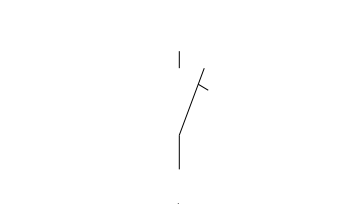 | DISCONNECT SWITCH, GANG OPERATED | |||
| 2 | 1. SWITCHING DEVICES — A. ABOVE 15KV (NOTES 1) | HORN GAP SWITCH, GANG OPERATED | ||||
| 3 | 1. SWITCHING DEVICES — A. ABOVE 15KV (NOTES 1) | DISCONNECT SWITCH-ROTARY BLADE, GANG OPERATED | ||||
| 4 | 1. SWITCHING DEVICES — A. ABOVE 15KV (NOTES 1) | DISCONNECT SWITCH, VERTICAL REACH (PANTOGRAPH TYPE) | ||||
| 5 | 1. SWITCHING DEVICES — A. ABOVE 15KV (NOTES 1) | PRIMARY FUSE CUTOUT-DRY TYPE | ||||
| 6 | 1. SWITCHING DEVICES — B. 15KV & BELOW (NOTE 1) | SAFETY SWITCH/DISCONNECT SWITCH | ||||
| 7 | 1. SWITCHING DEVICES — B. 15KV & BELOW (NOTE 1) | 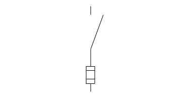 | FUSED SAFETY SWITCH | |||
| 8 | 1. SWITCHING DEVICES — B. 15KV & BELOW (NOTE 1) | DISCONNECT FUSE | ||||
| 9 | 1. SWITCHING DEVICES — B. 15KV & BELOW (NOTE 1) | 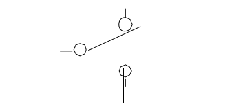 | TRANSFER SWITCH | |||
| 10 | 1. SWITCHING DEVICES — B. 15KV & BELOW (NOTE 1) | PRIMARY FUSE CUTOUT-OIL INSULATED | ||||
| 11 | 2. CIRCUIT PROTECTORS | AIR CIRCUIT BREAKER | ||||
| 12 | 2. CIRCUIT PROTECTORS | 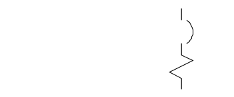 | AIR CIRCUIT BREAKER WITH MAGNETIC OVERCURRENT TRIP | |||
| 13 | 2. CIRCUIT PROTECTORS | 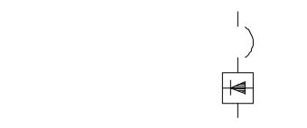 | AIR CIRCUIT BREAKER WITH SOLID STATE TRIPPING DEVICE | |||
| 14 | 2. CIRCUIT PROTECTORS | 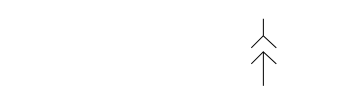 | DISCONNECT DEVICE | |||
| 15 | 2. CIRCUIT PROTECTORS — C. MOTOR CONTROL-5KV (NOTES 1 & 6) | 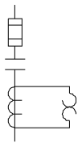 | FULL VOLTAGE, NONREVERSING STARTER WITH THERMAL OVERLOAD ELEMENTS | |||
| 16 | 2. CIRCUIT PROTECTORS — C. MOTOR CONTROL-5KV (NOTES 1 & 6) | 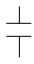 | CONTACTOR-BASIC SYMBOL | |||
| 17 | 2. CIRCUIT PROTECTORS — C. MOTOR CONTROL-5KV (NOTES 1 & 6) | 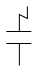 | CONTACTOR-ELECTRICALLY OPERATED WITH SERIES BLOWOUT | |||
| 18 | 2. CIRCUIT PROTECTORS — C. MOTOR CONTROL-5KV (NOTES 1 & 6) | 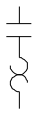 | STARTER, NONREVERSING, WITH THERMAL OVERLOAD ELEMENTS | |||
| 19 | 2. CIRCUIT PROTECTORS — C. MOTOR CONTROL-5KV (NOTES 1 & 6) | 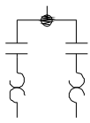 | STARTER, 2-SPEED, NONREVERSING, WITH THERMAL OVERLOAD ELEMENTS | |||
| 20 | 2. CIRCUIT PROTECTORS — C. MOTOR CONTROL-5KV (NOTES 1 & 6) | 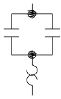 | STARTER, REVERSING, WITH THERMAL OVERLOAD ELEMENTS | |||
| 21 | 2. CIRCUIT PROTECTORS — C. MOTOR CONTROL-5KV (NOTES 1 & 6) | 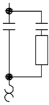 | REDUCED VOLTAGE STARTER, PRIMARY RESISTOR TYPE, WITH THERMAL OVERLOAD ELEMENTS | |||
| 22 | 2. CIRCUIT PROTECTORS — C. MOTOR CONTROL-5KV (NOTES 1 & 6) | 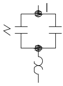 | AUTOMATIC TRANSFER CONTACTOR, MAGNETICALLY HELD ON NORMAL SOURCE, SPRING HELD ON EMERGENCY SOURCE | |||
| 23 | 3. OPERATING SYMBOLS (TO BE USED WITH SWITCHING DEVICES & CIRCUIT PROTECTORS) | 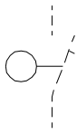 | MOTOR OPERATED | |||
| 24 | 3. OPERATING SYMBOLS (TO BE USED WITH SWITCHING DEVICES & CIRCUIT PROTECTORS) | 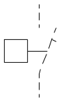 | SOLENOID OPERATED | |||
| 25 | 3. OPERATING SYMBOLS (TO BE USED WITH SWITCHING DEVICES & CIRCUIT PROTECTORS) | 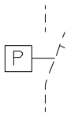 | PNEUMATICALLY OPERATED | |||
| 26 | 3. OPERATING SYMBOLS (TO BE USED WITH SWITCHING DEVICES & CIRCUIT PROTECTORS) | 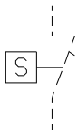 | STORED ENERGY OPERATED | |||
| 27 | 3. OPERATING SYMBOLS (TO BE USED WITH SWITCHING DEVICES & CIRCUIT PROTECTORS) | 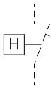 | HYDRAULICALLY OPERATED | |||
| 28 | 4. INSTRUMENT TRANSFORMERS (NOTE 2) | 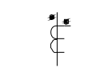 | CURRENT TRANSFORMER, GENERAL (WITH POLARITY MARKINGS) | |||
| 29 | 4. INSTRUMENT TRANSFORMERS (NOTE 2) | 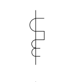 | CURRENT TRANSFORMER, BUSHING TYPE | |||
| 30 | 4. INSTRUMENT TRANSFORMERS (NOTE 2) | 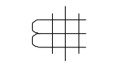 | CURRENT TRANSFORMER, ZERO SEQUENCE TYPE FOR GROUND DETECTION | |||
| 31 | 4. INSTRUMENT TRANSFORMERS (NOTE 2) | 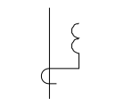 | LINEAR-COUPLER | |||
| 32 | 4. INSTRUMENT TRANSFORMERS (NOTE 2) | 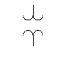 | POTENTIAL TRANSFORMER | |||
| 33 | 4. INSTRUMENT TRANSFORMERS (NOTE 2) | 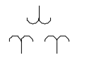 | POTENTIAL TRANSFORMER, DOUBLE SECONDARY | |||
| 34 | 4. INSTRUMENT TRANSFORMERS (NOTE 2) | 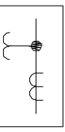 | METERING DEVICE | |||
| 35 | 5. TRANSFORMERS & REACTORS | 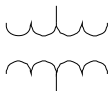 | POWER TRANSFORMER, GENERAL | |||
| 36 | 5. TRANSFORMERS & REACTORS | 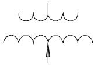 | POWER TRANSFORMER WITH TAP CHANGING UNDER LOAD | |||
| 37 | 5. TRANSFORMERS & REACTORS | 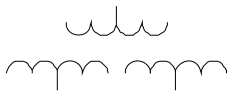 | POWER TRANSFORMER, 3 WINDING | |||
| 38 | 5. TRANSFORMERS & REACTORS | 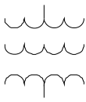 | POWER TRANSFORMER WITH TERTIARY WINDING | |||
| 39 | 5. TRANSFORMERS & REACTORS | 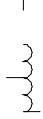 | AUTO-TRANSFORMER | |||
| 40 | 5. TRANSFORMERS & REACTORS | 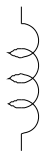 | REACTOR, AIR CORE | |||
| 41 | 5. TRANSFORMERS & REACTORS | 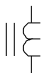 | REACTOR, IRON CORE | |||
| 42 | 5. TRANSFORMERS & REACTORS | 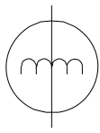 | INDUCTION VOLTAGE REGULATOR | |||
| 43 | 5. TRANSFORMERS & REACTORS | 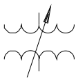 | VOLTAGE REGULATING TRANSFORMER | |||
| 44 | 6. TRANSFORMER CONNECTIONS | 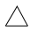 | 3Ø 3W DELTA UNGROUNDED | |||
| 45 | 6. TRANSFORMER CONNECTIONS | 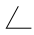 | 3Ø OPEN DELTA | |||
| 46 | 6. TRANSFORMER CONNECTIONS | 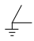 | 3Ø OPEN DELTA, GROUNDED AT COMMON POINT | |||
| 47 | 6. TRANSFORMER CONNECTIONS | 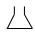 | 3Ø BROKEN DELTA | |||
| 48 | 6. TRANSFORMER CONNECTIONS | 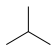 | 3Ø WYE UNGROUNDED | |||
| 49 | 6. TRANSFORMER CONNECTIONS | 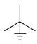 | 3Ø WYE GROUNDED NEUTRAL | |||
| 50 | 6. TRANSFORMER CONNECTIONS | 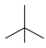 | 3Ø 4W WYE UNGROUNDED | |||
| 51 | 6. TRANSFORMER CONNECTIONS | 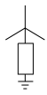 | 3Ø WYE RESISTANCE GROUNDED NEUTRAL | |||
| 52 | 7. ROTATING MACHINES (NOTES 3) | 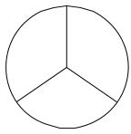 | SYNCHRONOUS GENERATOR | |||
| 53 | 7. ROTATING MACHINES (NOTES 3) | 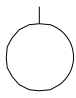 | CONSTANT SPEED, SQUIRREL CAGE INDUCTION MOTOR | |||
| 54 | 7. ROTATING MACHINES (NOTES 3) | 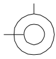 | VARIABLE SPEED, WOUND ROTOR INDUCTION MOTOR | |||
| 55 | 7. ROTATING MACHINES (NOTES 3) | 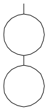 | MOTOR GENERATOR SET | |||
| 56 | 7. ROTATING MACHINES (NOTES 3) | 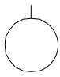 | SYNCHRONOUS MOTOR | |||
| 57 | 7. ROTATING MACHINES (NOTES 3) | 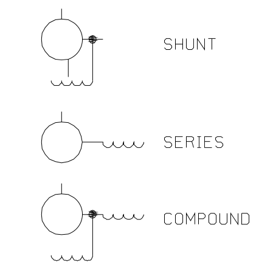 | DIRECT CURRENT MOTORS AND GENERATORS (SHUNT, SERIES, COMPOUND) | Three variants shown: SHUNT, SERIES, COMPOUND | ||
| 58 | 8. EXCITATION SYSTEMS FOR SYNCHRONOUS MACHINES | 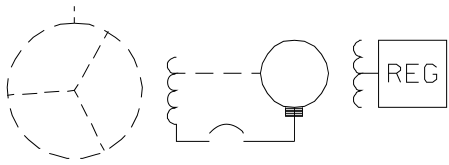 | CONVENTIONAL DIRECT-CONNECTED DC EXCITER | |||
| 59 | 8. EXCITATION SYSTEMS FOR SYNCHRONOUS MACHINES | ALTERNATE-EXCITER, STATIONARY RECTIFIER TYPE | ||||
| 60 | 8. EXCITATION SYSTEMS FOR SYNCHRONOUS MACHINES | AC EXCITER-ROTATING RECTIFIER TYPE | ||||
| 61 | 8. EXCITATION SYSTEMS FOR SYNCHRONOUS MACHINES | STATIC EXCITATION USING SPECIAL CURRENT/POTENTIAL (POWER) EXCITATION TRANSFORMER | ||||
| 62 | 8. EXCITATION SYSTEMS FOR SYNCHRONOUS MACHINES | PERMANENT MAGNET GENERATOR (USED WITH EXCITATION SYSTEMS HAVING PILOT EXCITERS) | ||||
| 63 | 9. MISCELLANEOUS POWER CIRCUIT DEVICES | COUPLING CAPACITOR POTENTIAL DEVICE | ||||
| 64 | 9. MISCELLANEOUS POWER CIRCUIT DEVICES | CAPACITOR-BUSHING POTENTIAL DEVICE | ||||
| 65 | 9. MISCELLANEOUS POWER CIRCUIT DEVICES | CARRIER CURRENT WAVE TRAP | ||||
| 66 | 9. MISCELLANEOUS POWER CIRCUIT DEVICES | COUPLING CAPACITOR FOR CARRIER CURRENT | ||||
| 67 | 9. MISCELLANEOUS POWER CIRCUIT DEVICES | LIGHTNING ARRESTER | ||||
| 68 | 9. MISCELLANEOUS POWER CIRCUIT DEVICES | CAPACITOR | ||||
| 69 | 9. MISCELLANEOUS POWER CIRCUIT DEVICES | GROUND CONNECTION | ||||
| 70 | 9. MISCELLANEOUS POWER CIRCUIT DEVICES | REMOVABLE LINKS | ||||
| 71 | 9. MISCELLANEOUS POWER CIRCUIT DEVICES | FUSE (NOTE 1) | ||||
| 72 | 9. MISCELLANEOUS POWER CIRCUIT DEVICES | RESISTOR (NOTE 4) | ||||
| 73 | 9. MISCELLANEOUS POWER CIRCUIT DEVICES | RESISTOR, VARIABLE (NOTE 4) | ||||
| 74 | 9. MISCELLANEOUS POWER CIRCUIT DEVICES | RHEOSTAT | ||||
| 75 | 9. MISCELLANEOUS POWER CIRCUIT DEVICES | RECTIFIER | ||||
| 76 | 9. MISCELLANEOUS POWER CIRCUIT DEVICES | INSTRUMENT SHUNT | ||||
| 77 | 9. MISCELLANEOUS POWER CIRCUIT DEVICES | BATTERY | ||||
| 78 | 9. MISCELLANEOUS POWER CIRCUIT DEVICES | INVERTER | ||||
| 79 | 9. MISCELLANEOUS POWER CIRCUIT DEVICES | BATTERY CHARGER | ||||
| 80 | 9. MISCELLANEOUS POWER CIRCUIT DEVICES | SPACE HEATER | ||||
| 81 | 9. MISCELLANEOUS POWER CIRCUIT DEVICES | PHASOR INDICATOR | ||||
| 82 | 9. MISCELLANEOUS POWER CIRCUIT DEVICES | VARIABLE SPEED DRIVE | ||||
| 83 | 9. MISCELLANEOUS POWER CIRCUIT DEVICES | MONITOR DEVICE | Symbol: boxed 'MD' | |||
| 84 | 9. MISCELLANEOUS POWER CIRCUIT DEVICES | MONITOR & PROTECTION DEVICE | Symbol: boxed 'MPD' | |||
| 85 | 9. MISCELLANEOUS POWER CIRCUIT DEVICES | MEDIUM VOLTAGE TRIP UNIT | Symbol: boxed 'MVTU' | |||
| 86 | 9. MISCELLANEOUS POWER CIRCUIT DEVICES | MOTOR PROTECTION RELAY | Symbol: boxed 'MPR' | |||
| 87 | 9. MISCELLANEOUS POWER CIRCUIT DEVICES | COMMUNICATION MODULE | Symbol: boxed 'C' | |||
| 88 | 9. MISCELLANEOUS POWER CIRCUIT DEVICES | ADDRESSABLE RELAY | Symbol: boxed 'ADR' | |||
| 89 | 9. MISCELLANEOUS POWER CIRCUIT DEVICES | LOW VOTAGE TRIP UNIT | Symbol: boxed 'LVTU'; as printed (likely 'LOW VOLTAGE') | |||
| 90 | 9. MISCELLANEOUS POWER CIRCUIT DEVICES | KEY INTERLOCK (USE WITH APPROPRIATE SWITCHING DEVICE OR CIRCUIT PROTECTOR) | Symbol: boxed 'K' | |||
| 91 | 9. MISCELLANEOUS POWER CIRCUIT DEVICES | MATCH HEXAGON | Symbol: hexagon containing 'XXX' | |||
| 92 | 9. MISCELLANEOUS POWER CIRCUIT DEVICES | REFERENCE DRAWING NUMBER | Symbol: hexagon containing 'xxx-xx/-xxx' | |||
| 93 | 9. MISCELLANEOUS POWER CIRCUIT DEVICES | ON A SAFETY RELATED DRAWING, NON-SAFETY RELATED COMPONENT(S) ARE SHOWN WITHIN THIS BOUNDARY | Boundary convention note | |||
| 94 | 9. MISCELLANEOUS POWER CIRCUIT DEVICES | SAFETY RELATED COMPONENT(S) ARE SHOWN WITHIN THIS BOUNDARY ON A NON-SAFETY RELATED DRAWING | Boundary convention note |
| # | Section | Symbol | Symbol 2 | Code | Description | Notes |
|---|---|---|---|---|---|---|
| 1 | 10. METERS AND INSTRUMENTS | (NOTE) | PREFIX R INDICATES RECORDING TYPE | section note | ||
| 2 | 10. METERS AND INSTRUMENTS | A | AMMETER | |||
| 3 | 10. METERS AND INSTRUMENTS | AH | AMPERE-HOUR METER | |||
| 4 | 10. METERS AND INSTRUMENTS | D | DEMAND METER | |||
| 5 | 10. METERS AND INSTRUMENTS | F | FREQUENCY METER | |||
| 6 | 10. METERS AND INSTRUMENTS | GD | GROUND DETECTOR | |||
| 7 | 10. METERS AND INSTRUMENTS | OHM | OHMMETER | |||
| 8 | 10. METERS AND INSTRUMENTS | OSC | OSCILLOGRAPH | |||
| 9 | 10. METERS AND INSTRUMENTS | PD | PRINTING DEMAND METER | |||
| 10 | 10. METERS AND INSTRUMENTS | PF | POWER FACTOR METER | |||
| 11 | 10. METERS AND INSTRUMENTS | RT | RUNNING TIME METER | |||
| 12 | 10. METERS AND INSTRUMENTS | SY | SYNCHROSCOPE | |||
| 13 | 10. METERS AND INSTRUMENTS | T | TEMPERATURE METER | |||
| 14 | 10. METERS AND INSTRUMENTS | THC | THERMAL CONVERTER | |||
| 15 | 10. METERS AND INSTRUMENTS | TI | TEMPERATURE INDICATOR | |||
| 16 | 10. METERS AND INSTRUMENTS | TLM | TELEMETERING | |||
| 17 | 10. METERS AND INSTRUMENTS | TM | TRANSMITTER | |||
| 18 | 10. METERS AND INSTRUMENTS | TR | TEMPERATURE RECORDER | |||
| 19 | 10. METERS AND INSTRUMENTS | */T | TRANSDUCER | A-INDICATES AMPS; V-INDICATES VOLTS; VAR-INDICATES VARS; W-INDICATES WATTS | ||
| 20 | 10. METERS AND INSTRUMENTS | V | VOLTMETER | |||
| 21 | 10. METERS AND INSTRUMENTS | VAR | VARMETER | |||
| 22 | 10. METERS AND INSTRUMENTS | VARH | VAR-HOUR METER | |||
| 23 | 10. METERS AND INSTRUMENTS | VV | DOUBLE VOLTMETER | |||
| 24 | 10. METERS AND INSTRUMENTS | W | WATTMETER | |||
| 25 | 10. METERS AND INSTRUMENTS | WH | WATTHOUR METER | |||
| 26 | 10. METERS AND INSTRUMENTS | WHD | WATTHOUR DEMAND METER | |||
| 27 | 11. METER & INSTRUMENT SWITCHES | AS | AMMETER SWITCH | |||
| 28 | 11. METER & INSTRUMENT SWITCHES | VS | VOLTMETER SWITCH | |||
| 29 | 11. METER & INSTRUMENT SWITCHES | SS | SYNCHRONIZING SWITCH | |||
| 30 | 11. METER & INSTRUMENT SWITCHES | MSS | METERING SELECTOR SWITCH | |||
| 31 | 12. CONTROL SWITCHES & PUSHBUTTON STATIONS | CONTROL SWITCH WITH RED & GREEN INDICATING LIGHTS. P-INDICATES PERMISSIVE | ||||
| 32 | 12. CONTROL SWITCHES & PUSHBUTTON STATIONS | CONTROL SWITCH WITH RED,GREEN & AMBER INDICATING LIGHTS | ||||
| 33 | 12. CONTROL SWITCHES & PUSHBUTTON STATIONS | START-STOP MAINTAINED CONTACT PUSH BUTTON | ||||
| 34 | 12. CONTROL SWITCHES & PUSHBUTTON STATIONS | START-STOP MAINTAINED CONTACT PUSH BUTTON WITH RED & GREEN INDICATING LIGHTS | ||||
| 35 | 12. CONTROL SWITCHES & PUSHBUTTON STATIONS | START-STOP MOMENTARY CONTACT PUSH BUTTON | ||||
| 36 | 12. CONTROL SWITCHES & PUSHBUTTON STATIONS | START-STOP MOMENTARY CONTACT PUSH BUTTON WITH RED & GREEN INDICATING LIGHTS | ||||
| 37 | 12. CONTROL SWITCHES & PUSHBUTTON STATIONS | RED & GREEN INDICATING LIGHTS | ||||
| 38 | 12. CONTROL SWITCHES & PUSHBUTTON STATIONS | SELECTOR SWITCH WITH RED & GREEN INDICATING LIGHTS | ||||
| 39 | 12. CONTROL SWITCHES & PUSHBUTTON STATIONS | HAND-OFF-AUTOMATIC SELECTOR SWITCH | ||||
| 40 | 12. CONTROL SWITCHES & PUSHBUTTON STATIONS | TEST SWITCH WITH RED & GREEN INDICATING LIGHTS | ||||
| 41 | 12. CONTROL SWITCHES & PUSHBUTTON STATIONS | COMBINATION CONTROL & TEST SWITCH WITH RED & GREEN INDICATING LIGHTS | ||||
| 42 | 12. CONTROL SWITCHES & PUSHBUTTON STATIONS | LOCK-OUT PUSH BUTTON | ||||
| 43 | 13. MISCELLANEOUS DEVICES | 20 | ELECTRICALLY OPERATED VALVE | |||
| 44 | 13. MISCELLANEOUS DEVICES | 23 | TEMPERATURE CONTROL DEVICE | |||
| 45 | 13. MISCELLANEOUS DEVICES | 24 | BUS TIE CIRCUIT BREAKER | |||
| 46 | 13. MISCELLANEOUS DEVICES | 25 | SYNCHRONIZING DEVICE | |||
| 47 | 13. MISCELLANEOUS DEVICES | 26 | APPARATUS THERMAL DEVICE | |||
| 48 | 13. MISCELLANEOUS DEVICES | 28 | FLAME DETECTOR | |||
| 49 | 13. MISCELLANEOUS DEVICES | 33 | POSITION SWITCH (POSITION OR LIMIT SWITCH) | |||
| 50 | 13. MISCELLANEOUS DEVICES | 41 | FIELD CIRCUIT BREAKER | |||
| 51 | 13. MISCELLANEOUS DEVICES | 42 | MOTOR STARTER | |||
| 52 | 13. MISCELLANEOUS DEVICES | 43 | TRANSFER DEVICE | |||
| 53 | 13. MISCELLANEOUS DEVICES | 52 | AC CIRCUIT BREAKER | |||
| 54 | 13. MISCELLANEOUS DEVICES | 63P | SUDDEN PRESSURE SWITCH | |||
| 55 | 13. MISCELLANEOUS DEVICES | 65 | GOVERNOR DEVICE | |||
| 56 | 13. MISCELLANEOUS DEVICES | 69 | PERMISSIVE CONTROL DEVICE | |||
| 57 | 13. MISCELLANEOUS DEVICES | 70 | RHEOSTAT DEVICE | |||
| 58 | 13. MISCELLANEOUS DEVICES | 71 | LIQUID OR GAS LEVEL SWITCH | |||
| 59 | 13. MISCELLANEOUS DEVICES | 72 | DC CIRCUIT BREAKER | |||
| 60 | 13. MISCELLANEOUS DEVICES | 75 | POSITION CHANGING MECHANISM | |||
| 61 | 13. MISCELLANEOUS DEVICES | 77 | IMPULSE TRANSMITTER DEVICE | |||
| 62 | 13. MISCELLANEOUS DEVICES | 89 | FUSE DISCONNECT | |||
| 63 | 13. MISCELLANEOUS DEVICES | 90 | REGULATING DEVICE | |||
| 64 | 13. MISCELLANEOUS DEVICES | 95 | METERING TRANSFER DEVICE | |||
| 65 | 13. MISCELLANEOUS DEVICES | 96 | BATTERY MONITOR | |||
| 66 | 13. MISCELLANEOUS DEVICES | 97 | BATTERY CHARGER FAILURE | |||
| 67 | 14. RELAYS | 21 | DISTANCE (IMPEDANCE) | |||
| 68 | 14. RELAYS | 27 | UNDERVOLTAGE | |||
| 69 | 14. RELAYS | 30 | ANNUNCIATOR | |||
| 70 | 14. RELAYS | 32 | REVERSE POWER | |||
| 71 | 14. RELAYS | 37 | UNDERCURRENT OR UNDERPOWER | |||
| 72 | 14. RELAYS | 40 | FIELD | |||
| 73 | 14. RELAYS | 46 | REVERSE PHASE (NEGATIVE PHASE SEQUENCE) | |||
| 74 | 14. RELAYS | 47 | PHASE SEQUENCE | |||
| 75 | 14. RELAYS | 48 | INCOMPLETE SEQUENCE | |||
| 76 | 14. RELAYS | 49 | THERMAL | |||
| 77 | 14. RELAYS | 50 | INSTANTANEOUS OVERCURRENT | |||
| 78 | 14. RELAYS | 50D | HIGHDROPOUT OVERCURRENT USED AS MOTOR DIFFERENTIAL | |||
| 79 | 14. RELAYS | 50G | INSTANTANEOUS GROUND CURRENT | |||
| 80 | 14. RELAYS | 50/51 | INSTANTANEOUS OVERCURRENT & TIME DELAY | |||
| 81 | 14. RELAYS | 51 | AC TIME OVERCURRENT | |||
| 82 | 14. RELAYS | 51G | GROUND CURRENT TIME DELAY | |||
| 83 | 14. RELAYS | 51N | RESIDUAL GROUND OVERCURRENT | |||
| 84 | 14. RELAYS | 51V | OVERCURRENT-TIME DELAY-VOLTAGE RESTRAINT | |||
| 85 | 14. RELAYS | 55 | POWER FACTOR | |||
| 86 | 14. RELAYS | 56 | FIELD APPLICATION | |||
| 87 | 14. RELAYS | 58 | RECTIFICATION FAILURE | |||
| 88 | 14. RELAYS | 59 | OVERVOLTAGE | |||
| 89 | 14. RELAYS | 60 | VOLTAGE BALANCE | |||
| 90 | 14. RELAYS | 62 | TIME DELAY | |||
| 91 | 14. RELAYS | 64 | GROUND PROTECTIVE | |||
| 92 | 14. RELAYS | 67 | AC DIRECTIONAL OVERCURRENT | |||
| 93 | 14. RELAYS | 68 | BLOCKING | |||
| 94 | 14. RELAYS | 74 | ALARM | |||
| 95 | 14. RELAYS | 76 | DC OVERCURRENT | |||
| 96 | 14. RELAYS | 78 | PHASE ANGLE | |||
| 97 | 14. RELAYS | 79 | AC RECLOSING | |||
| 98 | 14. RELAYS | 81 | FREQUENCY | |||
| 99 | A. CONTROL DEVICES | BLOCKING DIODE (SEMICONDUCTOR RECTIFIER) | ||||
| 100 | A. CONTROL DEVICES | PUSH BUTTON-MOMENTARY CONTACT NORMALLY CLOSED | ||||
| 101 | A. CONTROL DEVICES | PUSH BUTTON-MOMENTARY CONTACT NORMALLY OPEN | ||||
| 102 | A. CONTROL DEVICES | PUSH BUTTON LOCK-OUT | ||||
| 103 | A. CONTROL DEVICES | PUSH BUTTON-MAINTAINED CONTACT | ||||
| 104 | A. CONTROL DEVICES | CONTACTS OF OVERLOAD DEVICES | symbol drawn with device number 49 | |||
| 105 | A. CONTROL DEVICES | SELECTOR SWITCH (TWO OR THREE POSITIONS) | OFF position shown | |||
| 106 | A. CONTROL DEVICES | SOLENOID | ||||
| 107 | A. CONTROL DEVICES | NORMALLY OPEN CONTACT (NO) | ||||
| 108 | A. CONTROL DEVICES | NORMALLY CLOSED CONTACT (NC) | ||||
| 109 | A. CONTROL DEVICES | MOTOR OPERATED VALVE POSITION LIMIT SWITCH | ||||
| 110 | A. CONTROL DEVICES | MOTOR OPERATED VALVE TORQUE SWITCH | ||||
| 111 | B. OPERATING COIL & COMPONENTS | CC | CONTACTOR COIL | |||
| 112 | B. OPERATING COIL & COMPONENTS | CR | CONTROL RELAY | |||
| 113 | B. OPERATING COIL & COMPONENTS | LR | LATCHING RELAY | |||
| 114 | B. OPERATING COIL & COMPONENTS | M | MOTOR STARTER OPERATING COIL | |||
| 115 | B. OPERATING COIL & COMPONENTS | MC | VALVE MOTOR STARTER CLOSE COIL | |||
| 116 | B. OPERATING COIL & COMPONENTS | MO | VALVE MOTOR STARTER OPEN COIL | |||
| 117 | B. OPERATING COIL & COMPONENTS | TDDO | TIME DELAY DROPOUT | |||
| 118 | B. OPERATING COIL & COMPONENTS | TDPU | TIME DELAY PICKUP | |||
| 119 | B. OPERATING COIL & COMPONENTS | 42-C | REVERSING MAGNETIC CONTACTOR CLOSING COIL | |||
| 120 | B. OPERATING COIL & COMPONENTS | 42-MX | MOTOR STARTER AUXILIARY RELAY | |||
| 121 | B. OPERATING COIL & COMPONENTS | 42-O | REVERSING MAGNETIC CONTACTOR OPENING COIL | |||
| 122 | B. OPERATING COIL & COMPONENTS | 52-CC | CIRCUIT BREAKER CLOSE COIL | |||
| 123 | B. OPERATING COIL & COMPONENTS | 52-TC | CIRCUIT BREAKER TRIP COIL | |||
| 124 | B. OPERATING COIL & COMPONENTS | OPERATING COIL SYMBOL FORMS (CIRCLE OR ZIGZAG) | editorial caption: page prints only 'OR' between the two alternative coil symbol forms | |||
| 125 | CONTROL SYMBOLS - C. MISCELLANEOUS DEVICES | CS | CONTROL SWITCH | |||
| 126 | CONTROL SYMBOLS - C. MISCELLANEOUS DEVICES | dPS | DIFFERENTIAL PRESSURE SW... | right edge truncated in source PDF | ||
| 127 | CONTROL SYMBOLS - C. MISCELLANEOUS DEVICES | dPSH | DIFFERENTIAL PRESSURE SW... | right edge truncated in source PDF | ||
| 128 | CONTROL SYMBOLS - C. MISCELLANEOUS DEVICES | E/P | ELECTRO-PNEUMATIC CONVER... | right edge truncated in source PDF | ||
| 129 | CONTROL SYMBOLS - C. MISCELLANEOUS DEVICES | EP | ELECTRO-PNEUMATIC SWITCH | right edge truncated in source PDF (label may continue) | ||
| 130 | CONTROL SYMBOLS - C. MISCELLANEOUS DEVICES | FM | FLOW METER | |||
| 131 | CONTROL SYMBOLS - C. MISCELLANEOUS DEVICES | FR | FIRE RELAY | |||
| 132 | CONTROL SYMBOLS - C. MISCELLANEOUS DEVICES | FS | FLOW SWITCH | |||
| 133 | CONTROL SYMBOLS - C. MISCELLANEOUS DEVICES | FT | FLOW TRANSMITTER | |||
| 134 | CONTROL SYMBOLS - C. MISCELLANEOUS DEVICES | H | HUMIDISTAT | |||
| 135 | CONTROL SYMBOLS - C. MISCELLANEOUS DEVICES | LMS | LIMIT SWITCH | |||
| 136 | CONTROL SYMBOLS - C. MISCELLANEOUS DEVICES | LS | LEVEL SWITCH | |||
| 137 | CONTROL SYMBOLS - C. MISCELLANEOUS DEVICES | LT | LEVEL TRANSMITTER | |||
| 138 | CONTROL SYMBOLS - C. MISCELLANEOUS DEVICES | PE | PNEUMATIC-ELECTRIC RELAY | right edge truncated in source PDF (label may continue) | ||
| 139 | CONTROL SYMBOLS - C. MISCELLANEOUS DEVICES | PIL | POTENTIAL INDICATING LIGH... | right edge truncated in source PDF | ||
| 140 | CONTROL SYMBOLS - C. MISCELLANEOUS DEVICES | PMS | PERMISSIVE SWITCH | |||
| 141 | CONTROL SYMBOLS - C. MISCELLANEOUS DEVICES | PS | PRESSURE SWITCH | |||
| 142 | CONTROL SYMBOLS - C. MISCELLANEOUS DEVICES | PT | PRESSURE TRANSMITTER | |||
| 143 | CONTROL SYMBOLS - C. MISCELLANEOUS DEVICES | RTD | RESISTANCE TEMPERATURE... | right edge truncated in source PDF (likely DETECTOR) | ||
| 144 | CONTROL SYMBOLS - C. MISCELLANEOUS DEVICES | SD | SMOKE DETECTOR | |||
| 145 | CONTROL SYMBOLS - C. MISCELLANEOUS DEVICES | SS | SELECTOR SWITCH | |||
| 146 | CONTROL SYMBOLS - C. MISCELLANEOUS DEVICES | SV | SOLENOID VALVE CONTACT | |||
| 147 | CONTROL SYMBOLS - C. MISCELLANEOUS DEVICES | T | THERMOSTAT | |||
| 148 | CONTROL SYMBOLS - C. MISCELLANEOUS DEVICES | T/C | THERMOCOUPLE | |||
| 149 | CONTROL SYMBOLS - C. MISCELLANEOUS DEVICES | TE | TEMPERATURE ELEMENT | |||
| 150 | CONTROL SYMBOLS - C. MISCELLANEOUS DEVICES | THD | THERMODETECTOR IN MOTOR | right edge truncated in source PDF (label may continue) | ||
| 151 | CONTROL SYMBOLS - C. MISCELLANEOUS DEVICES | TS | TEMPERATURE SWITCH | |||
| 152 | CONTROL SYMBOLS - C. MISCELLANEOUS DEVICES (GRAPHIC SYMBOLS) | INDICATING LIGHT. R=RED G=GREEN W=WHITE A=AMBER B=BLUE C=CLEAR | ||||
| 153 | CONTROL SYMBOLS - C. MISCELLANEOUS DEVICES (GRAPHIC SYMBOLS) | INDICATING LIGHT WITH P... (LIGHT COLOR CODE AS ABO...) | right edge truncated in source PDF (likely PUSH-TO-TEST / AS ABOVE) | |||
| 154 | CONTROL SYMBOLS - C. MISCELLANEOUS DEVICES (GRAPHIC SYMBOLS) | BELL ALARM CONTACT | labeled BA | |||
| 155 | CONTROL SYMBOLS - C. MISCELLANEOUS DEVICES (GRAPHIC SYMBOLS) | ANNUNCIATOR POINT | ||||
| 156 | CONTROL SYMBOLS - C. MISCELLANEOUS DEVICES (GRAPHIC SYMBOLS) | COMPUTER INPUT OR OUTPU... | right edge truncated in source PDF (likely OUTPUT) | |||
| 157 | CONTROL SYMBOLS - C. MISCELLANEOUS DEVICES (GRAPHIC SYMBOLS) | THERMOCOUPLE | ||||
| 158 | CONTROL SYMBOLS - C. MISCELLANEOUS DEVICES (GRAPHIC SYMBOLS) | RESISTANCE TEMPERATURE... | right edge truncated in source PDF (RTD box symbol; likely DETECTOR) | |||
| 159 | CONTROL SYMBOLS - C. MISCELLANEOUS DEVICES (GRAPHIC SYMBOLS) | ELECTRICAL INTERLOCK | notation ---E--- | |||
| 160 | CONTROL SYMBOLS - C. MISCELLANEOUS DEVICES (GRAPHIC SYMBOLS) | MECHANICAL INTERLOCK | notation ---M--- | |||
| 161 | CONTROL SYMBOLS - C. MISCELLANEOUS DEVICES (GRAPHIC SYMBOLS) | KEY INTERLOCK | notation ---K--- | |||
| 162 | CONTROL SYMBOLS - C. MISCELLANEOUS DEVICES (GRAPHIC SYMBOLS) | SINGLE CONDUCTOR WITH SHIELD-UNGROUNDED | ||||
| 163 | CONTROL SYMBOLS - C. MISCELLANEOUS DEVICES (GRAPHIC SYMBOLS) | SINGLE CONDUCTOR WITH SHIELD-GROUNDED | ||||
| 164 | ABBREVIATIONS (USED WITH POWER TRANSFORMER...) | AA | OPEN DRY TYPE | |||
| 165 | ABBREVIATIONS (USED WITH POWER TRANSFORMER...) | GA | GAS FILLED DRY TYPE | |||
| 166 | ABBREVIATIONS (USED WITH POWER TRANSFORMER...) | OA | OIL FILLED, SELF COOLED T... | right edge truncated in source PDF | ||
| 167 | ABBREVIATIONS (USED WITH POWER TRANSFORMER...) | FA | OIL FILLED, FORCED AIR CO... | right edge truncated in source PDF | ||
| 168 | ABBREVIATIONS (USED WITH POWER TRANSFORMER...) | FOA | OIL FILLED, FORCED OIL, FO... AIR COOLED TYPE | right edge truncated in source PDF |
| # | Section | Symbol | Symbol 2 | Code | Description | Notes |
|---|---|---|---|---|---|---|
| 1 | CONDUIT & CABLE TRAY DRAWING SYMBOLS | PANEL (MISCELLANEOUS) | ||||
| 2 | CONDUIT & CABLE TRAY DRAWING SYMBOLS | LIGHTING PANEL | ||||
| 3 | CONDUIT & CABLE TRAY DRAWING SYMBOLS | POWER DISTRIBUTION PANEL | ||||
| 4 | CONDUIT & CABLE TRAY DRAWING SYMBOLS | TRANSFORMER | Symbol: boxed "TR" | |||
| 5 | CONDUIT & CABLE TRAY DRAWING SYMBOLS | SINGLE POLE MANUAL MOTOR STARTER WITH THERMAL OVERLOAD | Symbol labeled "OVLD" | |||
| 6 | CONDUIT & CABLE TRAY DRAWING SYMBOLS | MOTOR STARTER OR CONTROLLER | Symbol: boxed "S" | |||
| 7 | CONDUIT & CABLE TRAY DRAWING SYMBOLS | TRANSFER SWITCH | Symbol labeled "TS" | |||
| 8 | CONDUIT & CABLE TRAY DRAWING SYMBOLS | DISCONNECT OR SAFETY SWITCH | ||||
| 9 | CONDUIT & CABLE TRAY DRAWING SYMBOLS | POWER RECEPTACLE 100A, 480V, 3Ø, 4W GROUND OR AS OTHERWISE NOTED | ||||
| 10 | CONDUIT & CABLE TRAY DRAWING SYMBOLS | UNIT HEATER (NOTE 11) | ||||
| 11 | CONDUIT & CABLE TRAY DRAWING SYMBOLS | RADIANT HEATER (NOTE 11) | ||||
| 12 | CONDUIT & CABLE TRAY DRAWING SYMBOLS | 5KV BUS DUCT NON-SEGREGATED PHASE (NOTE 12) | ||||
| 13 | CONDUIT & CABLE TRAY DRAWING SYMBOLS | CABLE TRAY OR CABLE LADDER WITH COMPUTER NODE POINT IDENTIFICATION | ||||
| 14 | CONDUIT & CABLE TRAY DRAWING SYMBOLS | CABLE TRAY OR CABLE LADDER WITH ELEVATION OF BOTTOM OF TRAYS AND ITS FUNCTION | 3-30" TRAYS (P=POWER, C=CONTROL & I=INSTR); tags: EL__P / EL__C / EL__I | |||
| 15 | CONDUIT & CABLE TRAY DRAWING SYMBOLS | CABLE TRAY - UP | ||||
| 16 | CONDUIT & CABLE TRAY DRAWING SYMBOLS | CABLE TRAY - DOWN | ||||
| 17 | CONDUIT & CABLE TRAY DRAWING SYMBOLS | CONDUIT RUN EXPOSED | ||||
| 18 | CONDUIT & CABLE TRAY DRAWING SYMBOLS | CONDUIT EMBEDDED IN CONCRETE | ||||
| 19 | CONDUIT & CABLE TRAY DRAWING SYMBOLS | CONDUIT RUN CONCEALED | ||||
| 20 | CONDUIT & CABLE TRAY DRAWING SYMBOLS | CONDUIT RUN BELOW ELEVATION SHOWN | ||||
| 21 | CONDUIT & CABLE TRAY DRAWING SYMBOLS | FLEXIBLE CONDUIT | S INDICATES "SEALTITE" | |||
| 22 | CONDUIT & CABLE TRAY DRAWING SYMBOLS | CONDUIT OR CABLE TURNING UP OR TOWARDS OBSERVER | ||||
| 23 | CONDUIT & CABLE TRAY DRAWING SYMBOLS | CONDUIT OR CABLE TURNING DOWN OR AWAY FROM OBSERVER | ||||
| 24 | CONDUIT & CABLE TRAY DRAWING SYMBOLS | CABLE TERMINATION POINT | ||||
| 25 | CONDUIT & CABLE TRAY DRAWING SYMBOLS | UNDERFLOOR DUCT WITH JUNCTION BOX | T=TELEPHONE DUCT, P=POWER DUCT | |||
| 26 | CONDUIT & CABLE TRAY DRAWING SYMBOLS | J-INDICATES JUNCTION BOX, TB-INDICATES TERMINAL BOX, PB-INDICATES PULL BOX | ||||
| 27 | CONDUIT & CABLE TRAY DRAWING SYMBOLS | PUSHBUTTON STATION | Tagged "PB STA" on drawing | |||
| 28 | CONDUIT & CABLE TRAY DRAWING SYMBOLS | MOTOR-HORIZONTALLY MOUNTED | ||||
| 29 | CONDUIT & CABLE TRAY DRAWING SYMBOLS | MOTOR-VERTICALLY MOUNTED | ||||
| 30 | CONDUIT & CABLE TRAY DRAWING SYMBOLS | MOTOR OPERATED VALVE | ||||
| 31 | CONDUIT & CABLE TRAY DRAWING SYMBOLS | SOLENOID OPERATED VALVE | ||||
| 32 | CONDUIT & CABLE TRAY DRAWING SYMBOLS | ELECTRICAL PENETRATION ASSEMBLY | ||||
| 33 | LIGHTING DRAWING SYMBOLS | SUSPENSION MOUNTING (MTG HGT AFF=) | Shared note: LUMINAIRES WITH INCANDESCENT OR HIGH INTENSITY DISCHARGE LAMPS. A INDICATES TYPE AS SPECIFIED ON LIGHTING FIXTURE SCHEDULE. MTG HGT AFF=MOUNTING HEIGHT IN FEET ABOVE FINISHED FLOOR. C-2 INDICATES LUMINAIRE IS SUPPLIED FROM LIGHTING PANEL C, CIRCUIT NO 2. CONTROLLED FROM SWITCH "a" | |||
| 34 | LIGHTING DRAWING SYMBOLS | CEILING MOUNTED | Shared note: LUMINAIRES WITH INCANDESCENT OR HIGH INTENSITY DISCHARGE LAMPS. A INDICATES TYPE AS SPECIFIED ON LIGHTING FIXTURE SCHEDULE. MTG HGT AFF=MOUNTING HEIGHT IN FEET ABOVE FINISHED FLOOR. C-2 INDICATES LUMINAIRE IS SUPPLIED FROM LIGHTING PANEL C, CIRCUIT NO 2. CONTROLLED FROM SWITCH "a" | |||
| 35 | LIGHTING DRAWING SYMBOLS | WALL MOUNTED | Shared note: LUMINAIRES WITH INCANDESCENT OR HIGH INTENSITY DISCHARGE LAMPS. A INDICATES TYPE AS SPECIFIED ON LIGHTING FIXTURE SCHEDULE. MTG HGT AFF=MOUNTING HEIGHT IN FEET ABOVE FINISHED FLOOR. C-2 INDICATES LUMINAIRE IS SUPPLIED FROM LIGHTING PANEL C, CIRCUIT NO 2. CONTROLLED FROM SWITCH "a" | |||
| 36 | LIGHTING DRAWING SYMBOLS | EXIT-CEILING MOUNTED | Shared note: LUMINAIRES WITH INCANDESCENT OR HIGH INTENSITY DISCHARGE LAMPS. A INDICATES TYPE AS SPECIFIED ON LIGHTING FIXTURE SCHEDULE. MTG HGT AFF=MOUNTING HEIGHT IN FEET ABOVE FINISHED FLOOR. C-2 INDICATES LUMINAIRE IS SUPPLIED FROM LIGHTING PANEL C, CIRCUIT NO 2. CONTROLLED FROM SWITCH "a" | |||
| 37 | LIGHTING DRAWING SYMBOLS | EXIT-WALL MOUNTED | Shared note: LUMINAIRES WITH INCANDESCENT OR HIGH INTENSITY DISCHARGE LAMPS. A INDICATES TYPE AS SPECIFIED ON LIGHTING FIXTURE SCHEDULE. MTG HGT AFF=MOUNTING HEIGHT IN FEET ABOVE FINISHED FLOOR. C-2 INDICATES LUMINAIRE IS SUPPLIED FROM LIGHTING PANEL C, CIRCUIT NO 2. CONTROLLED FROM SWITCH "a" | |||
| 38 | LIGHTING DRAWING SYMBOLS | GOOSE NECK LIGHTING STANCHION & LUMINAIRE | Shared note: LUMINAIRES WITH INCANDESCENT OR HIGH INTENSITY DISCHARGE LAMPS. A INDICATES TYPE AS SPECIFIED ON LIGHTING FIXTURE SCHEDULE. MTG HGT AFF=MOUNTING HEIGHT IN FEET ABOVE FINISHED FLOOR. C-2 INDICATES LUMINAIRE IS SUPPLIED FROM LIGHTING PANEL C, CIRCUIT NO 2. CONTROLLED FROM SWITCH "a" | |||
| 39 | LIGHTING DRAWING SYMBOLS | STREET LIGHTING LUMINAIRE | Shared note: LUMINAIRES WITH INCANDESCENT OR HIGH INTENSITY DISCHARGE LAMPS. A INDICATES TYPE AS SPECIFIED ON LIGHTING FIXTURE SCHEDULE. MTG HGT AFF=MOUNTING HEIGHT IN FEET ABOVE FINISHED FLOOR. C-2 INDICATES LUMINAIRE IS SUPPLIED FROM LIGHTING PANEL C, CIRCUIT NO 2. CONTROLLED FROM SWITCH "a" | |||
| 40 | LIGHTING DRAWING SYMBOLS | FLOOD LIGHTING LUMINAIRE | Shared note: LUMINAIRES WITH INCANDESCENT OR HIGH INTENSITY DISCHARGE LAMPS. A INDICATES TYPE AS SPECIFIED ON LIGHTING FIXTURE SCHEDULE. MTG HGT AFF=MOUNTING HEIGHT IN FEET ABOVE FINISHED FLOOR. C-2 INDICATES LUMINAIRE IS SUPPLIED FROM LIGHTING PANEL C, CIRCUIT NO 2. CONTROLLED FROM SWITCH "a" | |||
| 41 | LIGHTING DRAWING SYMBOLS | SUSPENSION MOUNTING (MTG HGT AFF=) - FLUORESCENT | Shared note: FLUORESCENT LIGHTING LUMINAIRES DESIGNATIONS SAME AS ABOVE | |||
| 42 | LIGHTING DRAWING SYMBOLS | CEILING MOUNTED - FLUORESCENT | Shared note: FLUORESCENT LIGHTING LUMINAIRES DESIGNATIONS SAME AS ABOVE | |||
| 43 | LIGHTING DRAWING SYMBOLS | WALL MOUNTED - FLUORESCENT | Shared note: FLUORESCENT LIGHTING LUMINAIRES DESIGNATIONS SAME AS ABOVE | |||
| 44 | LIGHTING DRAWING SYMBOLS | BARE STRIP - FLUORESCENT | Shared note: FLUORESCENT LIGHTING LUMINAIRES DESIGNATIONS SAME AS ABOVE | |||
| 45 | LIGHTING DRAWING SYMBOLS | EMERGENCY LIGHTINGUNIT WITH SELF-CONTAINED BATTERY | Printed as "LIGHTINGUNIT" (sic) in source | |||
| 46 | LIGHTING DRAWING SYMBOLS | SINGLE POLE TOGGLE SWITCH | a-INDICATES ASSOCIATED CONTROLLED FIXTURE; 3-INDICATES 3 WAY SWITCH | |||
| 47 | LIGHTING DRAWING SYMBOLS | SWITCH AND SINGLE CONVENIENCE RECEPTACLE COMBINATION | ||||
| 48 | LIGHTING DRAWING SYMBOLS | SWITCH AND DUPLEX CONVENIENCE RECEPTACLE COMBINATION | ||||
| 49 | LIGHTING DRAWING SYMBOLS | RECEPTACLE-SINGLE CONVENIENCE, VERTICAL SLOTS, 120V, 20A, 3W, GROUNDED | ||||
| 50 | LIGHTING DRAWING SYMBOLS | RECEPTACLE-DUPLEX CONVENIENCE, VERTICAL SLOTS, 120V, 20A, 3W, GROUNDED | ||||
| 51 | LIGHTING DRAWING SYMBOLS | RECEPTACLE-SINGLE PHASE, HORIZONTAL SLOTS, 208V, 20A, 3W, GROUNDED | ||||
| 52 | LIGHTING DRAWING SYMBOLS | HOME RUN TO PANELBOARD | (CKTS LP1-2,4,6, 4#12-3/4"C) SAMPLE DESIGNATION | |||
| 53 | COMMUNICATION DRAWING SYMBOLS - A. SPEAKERS | SPEAKER (FOLLOWING DESIGNATIONS IDENTIFY TYPE) | Base speaker symbol; designation letter placed at symbol identifies type (see A-G, M, N) | |||
| 54 | COMMUNICATION DRAWING SYMBOLS - A. SPEAKERS | A | DIRECTIONAL TRUMPET TYPE SPEAKER | |||
| 55 | COMMUNICATION DRAWING SYMBOLS - A. SPEAKERS | B | PAGING/TALK BACK SPEAKER | |||
| 56 | COMMUNICATION DRAWING SYMBOLS - A. SPEAKERS | C | WIDE ANGLE TYPE SPEAKER | |||
| 57 | COMMUNICATION DRAWING SYMBOLS - A. SPEAKERS | D | CORRIDOR TYPE SPEAKER | |||
| 58 | COMMUNICATION DRAWING SYMBOLS - A. SPEAKERS | E | FLUSH, CEILING MOUNTED CONE SPEAKER ASSEMBLY WITH PROJECTING BAFFLE | |||
| 59 | COMMUNICATION DRAWING SYMBOLS - A. SPEAKERS | F | FLUSH, WALL OR PANEL MOUNTED, CONE SPEAKER ASSEMBLY WITH FLUSH BAFFLE | |||
| 60 | COMMUNICATION DRAWING SYMBOLS - A. SPEAKERS | G | SPECIAL PURPOSE LOUDSPEAKER | |||
| 61 | COMMUNICATION DRAWING SYMBOLS - A. SPEAKERS | M | SPEAKER AMPLIFIER ASSEMBLY-INDOOR | |||
| 62 | COMMUNICATION DRAWING SYMBOLS - A. SPEAKERS | N | SPEAKER AMPLIFIER ASSEMBLY-OUTDOOR | |||
| 63 | COMMUNICATION DRAWING SYMBOLS - B. HANDSETS | HANDSET STATION (FOLLOWING DESIGNATIONS IDENTIFY TYPE) | Base handset symbol; designation letters identify type (see WS, DS, FS, WP, SP) | |||
| 64 | COMMUNICATION DRAWING SYMBOLS - B. HANDSETS | WS | WALL STATION WITH HANDSET & SPEAKER AMPLIFIER | |||
| 65 | COMMUNICATION DRAWING SYMBOLS - B. HANDSETS | DS | DESK EDGE STATION WITH SUBSET, REMOTE HANDSET & SPEAKER AMPLIFIER | |||
| 66 | COMMUNICATION DRAWING SYMBOLS - B. HANDSETS | FS | FLUSH PANEL STATION WITH SUBSET, REMOTE HANDSET & SPEAKER AMPLIFIER | |||
| 67 | COMMUNICATION DRAWING SYMBOLS - B. HANDSETS | WP | WEATHERPROOF WALL STATION WITH HANDSET & SPEAKER AMPLIFIER | |||
| 68 | COMMUNICATION DRAWING SYMBOLS - B. HANDSETS | SP | SOUNDPROOF WALL STATION WITH HANDSET & SPEAKER AMPLIFIER | |||
| 69 | COMMUNICATION DRAWING SYMBOLS - C. TELEPHONE | DIRECT DISPATCH TELEPHONE | ||||
| 70 | COMMUNICATION DRAWING SYMBOLS - C. TELEPHONE | COMMERCIAL TELEPHONE | ||||
| 71 | COMMUNICATION DRAWING SYMBOLS - C. TELEPHONE | SEPARATE INTERCOM SYSTEM (DISPATCH OFFICE & CONTROL ROOM) | ||||
| 72 | COMMUNICATION DRAWING SYMBOLS - C. TELEPHONE | TELEPHONE SWITCHBOARD | Symbol: boxed "T/S" | |||
| 73 | COMMUNICATION DRAWING SYMBOLS - C. TELEPHONE | SOUND POWERED TELEPHONE JACK | Symbol tagged "SP" | |||
| 74 | COMMUNICATION DRAWING SYMBOLS - C. TELEPHONE | PRIVATE AUTOMATIC EXCHANGE SWITCHBOARD | Symbol: boxed "PAX" | |||
| 75 | GROUNDING DRAWING SYMBOLS - A. BELOW GRADE SYSTEMS | GROUND CABLE | ||||
| 76 | GROUNDING DRAWING SYMBOLS - A. BELOW GRADE SYSTEMS | GROUND CONNECTION | ||||
| 77 | GROUNDING DRAWING SYMBOLS - A. BELOW GRADE SYSTEMS | GROUND ROD | ||||
| 78 | GROUNDING DRAWING SYMBOLS - A. BELOW GRADE SYSTEMS | FOUNDATION PILE WITH GROUND CONNECTION | ||||
| 79 | GROUNDING DRAWING SYMBOLS - A. BELOW GRADE SYSTEMS | GROUND TEST BOX | ||||
| 80 | GROUNDING DRAWING SYMBOLS - A. BELOW GRADE SYSTEMS | GROUND CABLE RISER AT GRADE FOR FUTURE EXTENSION | ||||
| 81 | GROUNDING DRAWING SYMBOLS - B. ABOVE GRADE SYSTEMS | GROUND CABLE EXPOSED | ||||
| 82 | GROUNDING DRAWING SYMBOLS - B. ABOVE GRADE SYSTEMS | CABLE RUN CONCEALED |
| # | Section | Symbol | Symbol 2 | Code | Description | Notes |
|---|---|---|---|---|---|---|
| 1 | VALVES (9) (13) (14) | NORMALLY OPEN | NORMALLY CLOSED | A | ANGLE VALVE (6) | Symbol image shows NORMALLY OPEN (left) and NORMALLY CLOSED (right) variants. |
| 2 | VALVES (9) (13) (14) | NORMALLY OPEN | NORMALLY CLOSED | B | BUTTERFLY VALVE (7) | Symbol image shows NORMALLY OPEN (left) and NORMALLY CLOSED (right) variants. |
| 3 | VALVES (9) (13) (14) | NORMALLY OPEN | NORMALLY CLOSED | C | CHECK VALVE | Symbol image shows NORMALLY OPEN (left) and NORMALLY CLOSED (right) variants. NORMALLY CLOSED variant: NA |
| 4 | VALVES (9) (13) (14) | NORMALLY OPEN | NORMALLY CLOSED | C | AIR ASSIST CHECK VALVE | Symbol image shows NORMALLY OPEN (left) and NORMALLY CLOSED (right) variants. NORMALLY CLOSED variant: NA |
| 5 | VALVES (9) (13) (14) | NORMALLY OPEN | NORMALLY CLOSED | D | DIAPHRAGM VALVE | Symbol image shows NORMALLY OPEN (left) and NORMALLY CLOSED (right) variants. |
| 6 | VALVES (9) (13) (14) | NORMALLY OPEN | NORMALLY CLOSED | E | EXCESS FLOW CHECK VALVE | Symbol image shows NORMALLY OPEN (left) and NORMALLY CLOSED (right) variants. NORMALLY CLOSED variant: NA |
| 7 | VALVES (9) (13) (14) | NORMALLY OPEN | NORMALLY CLOSED | F | FOUR WAY VALVE (7) (12) | Symbol image shows NORMALLY OPEN (left) and NORMALLY CLOSED (right) variants. NORMALLY CLOSED variant: NA |
| 8 | VALVES (9) (13) (14) | NORMALLY OPEN | NORMALLY CLOSED | G | GATE VALVE | Symbol image shows NORMALLY OPEN (left) and NORMALLY CLOSED (right) variants. |
| 9 | VALVES (9) (13) (14) | NORMALLY OPEN | NORMALLY CLOSED | H | DELUGE VALVE | Symbol image shows NORMALLY OPEN (left) and NORMALLY CLOSED (right) variants. NORMALLY OPEN variant: NA |
| 10 | VALVES (9) (13) (14) | NORMALLY OPEN | NORMALLY CLOSED | I | STOP CHECK VALVE | Symbol image shows NORMALLY OPEN (left) and NORMALLY CLOSED (right) variants. |
| 11 | VALVES (9) (13) (14) | NORMALLY OPEN | NORMALLY CLOSED | J | DRY PIPE VALVE | Symbol image shows NORMALLY OPEN (left) and NORMALLY CLOSED (right) variants. NORMALLY OPEN variant: NA |
| 12 | VALVES (9) (13) (14) | NORMALLY OPEN | NORMALLY CLOSED | K | VACUUM BREAKER (7) | Symbol image shows NORMALLY OPEN (left) and NORMALLY CLOSED (right) variants. NORMALLY OPEN variant: NA |
| 13 | VALVES (9) (13) (14) | NORMALLY OPEN | NORMALLY CLOSED | L | BALL VALVE | Symbol image shows NORMALLY OPEN (left) and NORMALLY CLOSED (right) variants. |
| 14 | VALVES (9) (13) (14) | NORMALLY OPEN | NORMALLY CLOSED | M | BALL DRIP VALVE | Symbol image shows NORMALLY OPEN (left) and NORMALLY CLOSED (right) variants. NORMALLY OPEN variant: NA |
| 15 | VALVES (9) (13) (14) | NORMALLY OPEN | NORMALLY CLOSED | N | NEEDLE VALVE | Symbol image shows NORMALLY OPEN (left) and NORMALLY CLOSED (right) variants. |
| 16 | VALVES (9) (13) (14) | NORMALLY OPEN | NORMALLY CLOSED | P | PLUG VALVE | Symbol image shows NORMALLY OPEN (left) and NORMALLY CLOSED (right) variants. |
| 17 | VALVES (9) (13) (14) | NORMALLY OPEN | NORMALLY CLOSED | Q | THREE WAY PLUG VALVE (7) (8) | Symbol image shows NORMALLY OPEN (left) and NORMALLY CLOSED (right) variants. |
| 18 | VALVES (9) (13) (14) | NORMALLY OPEN | NORMALLY CLOSED | R | DOUBLE BLOCK ROOT VALVE | Symbol image shows NORMALLY OPEN (left) and NORMALLY CLOSED (right) variants. |
| 19 | VALVES (9) (13) (14) | NORMALLY OPEN | NORMALLY CLOSED | S | SAFETY OR RELIEF VALVE (7) | Symbol image shows NORMALLY OPEN (left) and NORMALLY CLOSED (right) variants. NORMALLY OPEN variant: NA |
| 20 | VALVES (9) (13) (14) | NORMALLY OPEN | NORMALLY CLOSED | T | THREE WAY VALVE (7) (8) | Symbol image shows NORMALLY OPEN (left) and NORMALLY CLOSED (right) variants. |
| 21 | VALVES (9) (13) (14) | NORMALLY OPEN | NORMALLY CLOSED | U | ALARM CHECK VALVE | Symbol image shows NORMALLY OPEN (left) and NORMALLY CLOSED (right) variants. NORMALLY CLOSED variant: NA |
| 22 | VALVES (9) (13) (14) | NORMALLY OPEN | NORMALLY CLOSED | V | GLOBE VALVE (8) | Symbol image shows NORMALLY OPEN (left) and NORMALLY CLOSED (right) variants. |
| 23 | VALVES (9) (13) (14) | NORMALLY OPEN | NORMALLY CLOSED | W | ANGLE STOP CHECK VALVE | Symbol image shows NORMALLY OPEN (left) and NORMALLY CLOSED (right) variants. |
| 24 | VALVES (9) (13) (14) | NORMALLY OPEN | NORMALLY CLOSED | X | PINCH VALVE | Symbol image shows NORMALLY OPEN (left) and NORMALLY CLOSED (right) variants. |
| 25 | VALVES (9) (13) (14) | NORMALLY OPEN | NORMALLY CLOSED | Y | TURBINE STOP OR CONTROL VALVE | Symbol image shows NORMALLY OPEN (left) and NORMALLY CLOSED (right) variants. |
| 26 | VALVES (9) (13) (14) | NORMALLY OPEN | NORMALLY CLOSED | Z | ANGLE CHECK VALVE | Symbol image shows NORMALLY OPEN (left) and NORMALLY CLOSED (right) variants. NORMALLY CLOSED variant: NA |
| 27 | VALVES (9) (13) (14) | PACKLESS GLOBE (METAL DIAPHRAGM) ... | Row cut off at page bottom edge in source PDF scan; only first text line 'PACKLESS GLOBE' fully legible, second line partially visible. | |||
| 28 | DAMPERS (9) (13) | B | FACE / BYPASS DAMPER | |||
| 29 | DAMPERS (9) (13) | F | FIRE DAMPER | |||
| 30 | DAMPERS (9) (13) | G | GRAVITY DAMPER | |||
| 31 | DAMPERS (9) (13) | L | FIXED LOUVER | |||
| 32 | DAMPERS (9) (13) | M | OPERABLE LOUVER DAMPER | |||
| 33 | DAMPERS (9) (13) | P | PARALLEL BLADE DAMPER (SINGLE OR MULTIBLADE) | |||
| 34 | DAMPERS (9) (13) | Q | OPPOSED BLADE DAMPER | |||
| 35 | DAMPERS (9) (13) | S | SECURITY DAMPER | |||
| 36 | DAMPERS (9) (13) | T | TORNADO DAMPER | |||
| 37 | DAMPERS (9) (13) | Y | BLAST GATE DAMPER | |||
| 38 | OPERATORS & ACCESSORIES (9) (13) | C | AIR DIAPHRAGM OPERATOR WITH VALVE POSITIONER | |||
| 39 | OPERATORS & ACCESSORIES (9) (13) | D | AIR DIAPHRAGM OPERATOR | |||
| 40 | OPERATORS & ACCESSORIES (9) (13) | F | PRESSURE CONTROL OPERATOR (SELF CONTAINED OR EXTERNAL SENSING) | |||
| 41 | OPERATORS & ACCESSORIES (9) (13) | K | ELECTRO - HYDRAULIC | |||
| 42 | OPERATORS & ACCESSORIES (9) (13) | L | PNEUMATIC - HYDRAULIC | |||
| 43 | OPERATORS & ACCESSORIES (9) (13) | M | MOTOR OPERATOR | |||
| 44 | OPERATORS & ACCESSORIES (9) (13) | S | SOLENOID OPERATOR (11) | |||
| 45 | OPERATORS & ACCESSORIES (9) (13) | Y | UNCLASSIFIED (TYPE OF ACTUATOR TO BE WRITTEN ADJACENT TO THE SYSMBOL) | 'SYSMBOL' as printed in source (sic, likely 'SYMBOL') | ||
| 46 | OPERATORS & ACCESSORIES (9) (13) | Z | POST INDICATOR | |||
| 47 | OPERATORS & ACCESSORIES (9) (13) | EXTENSION STEM (REACH ROD) THRU SHIELD WALL | ||||
| 48 | EQUIPMENT | TWO CANNED MOTOR REACTOR COOLANT PUMPS ARE COUPLED TO ONE STEAM GENERATOR CHANNEL HEAD IN THE INVERTED POSITION. THE STEAM GENERATOR IS OF A VERTICAL U-TUBE TYPE. | Combined RCP/steam-generator arrangement symbol | |||
| 49 | EQUIPMENT | MP | CENTRIFUGAL PUMP | |||
| 50 | EQUIPMENT | MP | CANNED MOTOR PUMP | |||
| 51 | EQUIPMENT | MP | GEAR PUMP | |||
| 52 | EQUIPMENT | MP | TURBINE DRIVEN CENTRIFUGAL PUMP | |||
| 53 | EQUIPMENT | MP | DOUBLE DIAPHRAM PUMP | 'DIAPHRAM' as printed in source (sic) | ||
| 54 | EQUIPMENT | MP | SINGLE DIAPHRAM PUMP | 'DIAPHRAM' as printed in source (sic) | ||
| 55 | EQUIPMENT | MP | VERTICAL SUMP PUMP (RESERVOIR SUCTION) | |||
| 56 | EQUIPMENT | MP | VERTICAL DEEP WELL PUMP (PIPED SUCTION) | |||
| 57 | EQUIPMENT | MP | SUBMERSIBLE PUMP | |||
| 58 | EQUIPMENT | MP | POSITIVE DISPLACEMENT PUMP | |||
| 59 | EQUIPMENT | MT (16) | ATMOSPHERIC PRESSURE TANK | |||
| 60 | EQUIPMENT | MG OR MP | SINGLE FLOW TURBINE | |||
| 61 | EQUIPMENT | ME | TURBINE CONDENSER | |||
| 62 | EQUIPMENT | ME | U-TUBE HEAT EXCHANGER | |||
| 63 | EQUIPMENT | ME | PLATE TYPE HEAT EXCHANGER | |||
| 64 | EQUIPMENT | ME | HEAT EXCHANGER (OTHER TYPE) | |||
| 65 | EQUIPMENT | ME | MECHANICAL DRAFT COOLING TOWER | |||
| 66 | EQUIPMENT | ME | DESUPERHEATER | |||
| 67 | EQUIPMENT | MV (15) | DEMINERALIZER | |||
| 68 | EQUIPMENT | MT (16) | PRESSURIZED GAS BOTTLE | |||
| 69 | EQUIPMENT | MT (16) | PRESSURE VESSEL,TANK, RECEIVER,DRYER,SEPARATOR,ECT. (SHOW VERTICAL OR HORIZONTAL) | 'ECT.' as printed in source (sic, likely 'ETC.') | ||
| 70 | EQUIPMENT | MT (16) | SAMPLE VESSEL | |||
| 71 | EQUIPMENT | MK | RECIPROCATING AIR COMPRESSOR | |||
| 72 | EQUIPMENT | MY | MIXER (AIR OR ELECTRICAL) | |||
| 73 | EQUIPMENT | MY | EXHAUST HOOD | |||
| 74 | EQUIPMENT | MA / MK | FAN, BLOWER / COMPRESSOR, VACUUM PUMP | |||
| 75 | EQUIPMENT | MA OR MK | FAN,BLOWER OR COMPRESSOR WITH PNEUMATICALLY CONTROLLED VARIABLE INLET VANES | |||
| 76 | EQUIPMENT | MA | VANE - AXIAL OR PROPELLER TYPE FAN | |||
| 77 | EQUIPMENT | MA | ROOF VENTILATOR | |||
| 78 | EQUIPMENT | MY | HUMIDIFIER | |||
| 79 | EQUIPMENT | MY | FILTER OR OTHER COMPONENT (SEE PLENUM LEGEND) | |||
| 80 | EQUIPMENT | MS (15) | AIR HANDLING UNIT WITH FILTRATION OR OTHER COMPONENT (SEE PLENUM LEGEND) | |||
| 81 | EQUIPMENT | MS (15) | FILTER PLENUM OR OTHER COMPONNET (SEE PLENUM LEGEND) | 'COMPONNET' as printed in source (sic, likely 'COMPONENT') | ||
| 82 | EQUIPMENT | MB | HEATER (STEAM OR ELECTRICAL) | |||
| 83 | EQUIPMENT | MY | VARIABLE AIR VOLUME BOX | |||
| 84 | VALVES AND DAMPERS | VALVE / DAMPER NUMBERING EXAMPLE (REFERENCE A) | VALVE / DAMPER NUMBER: RCS PL V 001 A. Callouts: VALVE (V) OR DAMPER (D); VALVE / DAMPER NUMBER (3 DIGITS); PIPING / DUCT LOOP (IF APPLICABLE); SEQUENCE NUMBER; GENERAL COMPONENT TYPE; SYSTEM LOCATOR CODE (SEE DOCUMENT APP-GW-G0X-001); PL = PIPE LINE, MD = MECHANICAL DUCTWORK, JT = INSTRUMENT TUBING. P&ID LABEL: V001A | |||
| 85 | EQUIPMENT | EQUIPMENT NUMBERING EXAMPLE (REFERENCE A) | EQUIPMENT NUMBER: RCS MP 01 A. Callouts: SPECIFIC EQUIPMENT TYPE; EQUIPMENT NUMBER (2 DIGITS); LOOP DESIGNATION (16); SEQUENCE NUMBER; GENERAL COMPONENT TYPE (SHOWN BELOW SYSBOL NAME) [sic]; SYSTEM LOCATOR CODE (SEE DOCUMENT APP-GW-GOX-001). SPECIFIC COMPONENT TYPE IS USED ONLY FOR: - MECHANICAL / HVAC SPECIALTIES (MY); SEE BELOW - EQUIPMENT DRIVERS (E.G. PUMP MOTOR); SEE REFERENCE A. EQUIPMENT DRIVERS ARE NOT LABELED ON THE P&ID. P&ID LABEL: MP 01A | |||
| 86 | PLENUM LEGEND (title and right side truncated in source PDF) | EH | ELECTI... | Right side of text truncated in source PDF; only fragment legible. | ||
| 87 | PLENUM LEGEND (title and right side truncated in source PDF) | EHC | ELECTI... | Right side of text truncated in source PDF; only fragment legible. | ||
| 88 | PLENUM LEGEND (title and right side truncated in source PDF) | DEM | MOISTU... | Right side of text truncated in source PDF; only fragment legible. | ||
| 89 | PLENUM LEGEND (title and right side truncated in source PDF) | CC | COOLIN... | Right side of text truncated in source PDF; only fragment legible. | ||
| 90 | PLENUM LEGEND (title and right side truncated in source PDF) | LF | LOW EF... | Right side of text truncated in source PDF; only fragment legible. | ||
| 91 | PLENUM LEGEND (title and right side truncated in source PDF) | HF | HIGH E... | Right side of text truncated in source PDF; only fragment legible. | ||
| 92 | PLENUM LEGEND (title and right side truncated in source PDF) | HEPA | HIGH E... | Right side of text truncated in source PDF; only fragment legible. | ||
| 93 | PLENUM LEGEND (title and right side truncated in source PDF) | C | CHARC... | Right side of text truncated in source PDF; only fragment legible. | ||
| 94 | PLENUM LEGEND (title and right side truncated in source PDF) | DX | DIRECT... | Right side of text truncated in source PDF; only fragment legible. | ||
| 95 | PLENUM LEGEND (title and right side truncated in source PDF) | HC | HEATIN... | Right side of text truncated in source PDF; only fragment legible. | ||
| 96 | SPECIFIC MECHANICAL ... (title and right side truncated in source PDF) | A | VARIABLE A... | Right side of text truncated in source PDF. | ||
| 97 | SPECIFIC MECHANICAL ... (title and right side truncated in source PDF) | C | COIL (MECH... | Right side of text truncated in source PDF. | ||
| 98 | SPECIFIC MECHANICAL ... (title and right side truncated in source PDF) | D | DEMISTER | |||
| 99 | SPECIFIC MECHANICAL ... (title and right side truncated in source PDF) | E | HYDROGEN... | Right side of text truncated in source PDF. | ||
| 100 | SPECIFIC MECHANICAL ... (title and right side truncated in source PDF) | F | FILTER | |||
| 101 | SPECIFIC MECHANICAL ... (title and right side truncated in source PDF) | G | GRILLE | |||
| 102 | SPECIFIC MECHANICAL ... (title and right side truncated in source PDF) | H | HUMIDIFIER | |||
| 103 | SPECIFIC MECHANICAL ... (title and right side truncated in source PDF) | R | REGISTER | |||
| 104 | SPECIFIC MECHANICAL ... (title and right side truncated in source PDF) | U | UNIT HEATE... | Right side of text truncated in source PDF. | ||
| 105 | SPECIFIC MECHANICAL ... (title and right side truncated in source PDF) | V | UNIT VENTL... | Right side of text truncated in source PDF. | ||
| 106 | SPECIFIC MECHANICAL ... (title and right side truncated in source PDF) | W | UNIT HEATE... | Right side of text truncated in source PDF. | ||
| 107 | SPECIFIC MECHANICAL ... (title and right side truncated in source PDF) | X | DISPOSABLE... | Right side of text truncated in source PDF. | ||
| 108 | SPECIFIC MECHANICAL ... (title and right side truncated in source PDF) | Y | OTHER MEC... | Right side of text truncated in source PDF. | ||
| 109 | SPECIFIC MECHANICAL ... (title and right side truncated in source PDF) | * | * UNIT VENTILA... FROM FANS (... ON A FLUME ... THROUGH A ... DUCTWORK S... | Footnote; right side truncated in source PDF. | ||
| 110 | ARCHITECTURAL PLUMBING ITEMS AND MODULES | ARCHITECTURAL PLUMBING ITEMS AND MODULES USE AREA LOCATORS, RATHER THAN SYSTEM LOCATORS, IN THEIR TAG NUMBERS. | ||||
| 111 | ARCHITECTURAL PLUMBING ITEMS AND MODULES | S | SINK | Tag format: XXX-AP-SXXX | ||
| 112 | ARCHITECTURAL PLUMBING ITEMS AND MODULES | T | TOILET | Tag format: XXX-AP-TXXX | ||
| 113 | ARCHITECTURAL PLUMBING ITEMS AND MODULES | DF | DRINKING FOUNTAIN | Tag format: XXX-AP-FXXX | ||
| 114 | ARCHITECTURAL PLUMBING ITEMS AND MODULES | SH | SHOWER | Tag format: XXX-AP-WXXX | ||
| 115 | ARCHITECTURAL PLUMBING ITEMS AND MODULES | TAG NUMBERING CALLOUT DIAGRAM | Callouts: AREA LOCATOR CODE; GENERAL EQUIPMENT TYPE: ARCHITECTURAL PLUMBING (AP), STANDARD SERVICE MODLUE (KU) [sic]; SPECIFIC EQUIPMENT TYPE: SINK (S), TOILET (T), SHOWER (W), DRINKING FOUNTAIN (F), EYEWASH/EMERGENCY SHOWER (E), STANDARD SERVICE MODULE (05); EQUIPMENT NUMBER (2 DIGITS); LOOP DESIGNATION (NOTE 16, APP-GW-M6-001) | |||
| 116 | ARCHITECTURAL PLUMBING ITEMS AND MODULES | MODULE OUTLINE SYMBOLS (CUT OFF) | Two rectangular module symbols at page bottom are cut off by the page edge in the source PDF; no labels visible. |
| # | Section | Symbol | Symbol 2 | Code | Description | Notes |
|---|---|---|---|---|---|---|
| 1 | PIPING AND DUCT COMPONENTS | COMPONENT NUMBERING EXAMPLE (REFERENCE A) — COMPONENT NUMBER: APP-RCS-PY-S01A; P&ID LABEL: S01A | Callouts: SPECIFIC COMPONENT TYPE (NOTE 2); COMPONENT NUMBER (2 DIGITS); PIPE / DUCT LOOP (IF APPLICABLE) (SEE NOTE 15 ON GW-M6-001); SEQUENCE NUMBER; GENERAL COMPONENT TYPE (PY = PIPING SPECIALTY, MD = MECHANICAL DUCTWORK); SYSTEM LOCATOR CODE (REFERENCE C) | |||
| 2 | PIPING AND DUCT COMPONENTS | CONCENTRIC REDUCER | ||||
| 3 | PIPING AND DUCT COMPONENTS | ECCENTRIC REDUCER | ||||
| 4 | PIPING AND DUCT COMPONENTS | CAPPED OR STUB END | ||||
| 5 | PIPING AND DUCT COMPONENTS | DRIP POT | ||||
| 6 | PIPING AND DUCT COMPONENTS | SCREWED CAP | ||||
| 7 | PIPING AND DUCT COMPONENTS | HOSE CONNECTION | ||||
| 8 | PIPING AND DUCT COMPONENTS | FLANGE CONNECTION (PIPING OR EQUIPMENT) | ||||
| 9 | PIPING AND DUCT COMPONENTS | RUPTURE DISC (PRESSURE RELIEF) (K) | ||||
| 10 | PIPING AND DUCT COMPONENTS | RUPTURE DISC (VACUUM RELIEF) (K) | ||||
| 11 | PIPING AND DUCT COMPONENTS | SPECTACLE BLIND (NORMALLY OPEN) (B) | Symbol annotated NO | |||
| 12 | PIPING AND DUCT COMPONENTS | SPECTACLE BLIND (NORMALLY CLOSED) (B) | Symbol annotated NC | |||
| 13 | PIPING AND DUCT COMPONENTS | ORIFICE (4) (R) | ||||
| 14 | PIPING AND DUCT COMPONENTS | FLOW CONDITIONER (R) | ||||
| 15 | PIPING AND DUCT COMPONENTS | PLUG RESISTANT ORIFICE (R) | ||||
| 16 | PIPING AND DUCT COMPONENTS | EDUCTOR OR EJECTOR (N) | ||||
| 17 | PIPING AND DUCT COMPONENTS | CAVITATING VENTURI OR FLOW NOZZLE (4) (N) | ||||
| 18 | PIPING AND DUCT COMPONENTS | QUICK DISCONNECT COUPLING (M) | ||||
| 19 | PIPING AND DUCT COMPONENTS | EXPANSION JOINT (E) | ||||
| 20 | PIPING AND DUCT COMPONENTS | LOOP SEAL (TRAP) | ||||
| 21 | PIPING AND DUCT COMPONENTS | S TRAP | ||||
| 22 | PIPING AND DUCT COMPONENTS | P TRAP | ||||
| 23 | PIPING AND DUCT COMPONENTS | FLEXIBLE PIPE | ||||
| 24 | PIPING AND DUCT COMPONENTS | OPEN FUNNEL (D) | ||||
| 25 | PIPING AND DUCT COMPONENTS | ROOF DRAIN (D) | ||||
| 26 | PIPING AND DUCT COMPONENTS | FLOOR DRAIN OR SURFACE COLLECTION UNIT (D) | ||||
| 27 | PIPING AND DUCT COMPONENTS | PLUGGED FLOOR DRAIN OR SURFACE COLLECTION UNIT (D) | ||||
| 28 | PIPING AND DUCT COMPONENTS | AUTOMATIC VENT (Y) | ||||
| 29 | PIPING AND DUCT COMPONENTS | CONTAINMENT PENETRATION (C) | ||||
| 30 | PIPING AND DUCT COMPONENTS | FILTER (PIPING) (S) | ||||
| 31 | PIPING AND DUCT COMPONENTS | JOHNSON SCREEN (S) | ||||
| 32 | PIPING AND DUCT COMPONENTS | STRAINER (S) | ||||
| 33 | PIPING AND DUCT COMPONENTS | Y STRAINER (S) | ||||
| 34 | PIPING AND DUCT COMPONENTS | AUTOMATIC STRAINER (S) | Symbol annotated M (motor) and TC | |||
| 35 | PIPING AND DUCT COMPONENTS | TEMPORARY STRAINER (S) (NOTE 9) | ||||
| 36 | PIPING AND DUCT COMPONENTS | FLOAT TRAP (T) | ||||
| 37 | PIPING AND DUCT COMPONENTS | STEAM TRAP OR LIQUID DRAINER (T) | ||||
| 38 | PIPING AND DUCT COMPONENTS | RESIN TRAP (T) | ||||
| 39 | PIPING AND DUCT COMPONENTS | CYCLONE SEPARATOR (P) | ||||
| 40 | PIPING AND DUCT COMPONENTS | FIRE HYDRANT WITH HOSE RACK (H) | ||||
| 41 | PIPING AND DUCT COMPONENTS | FIRE HYDRANT (H) | ||||
| 42 | PIPING AND DUCT COMPONENTS | HOSE RACK STATION (F) | ||||
| 43 | PIPING AND DUCT COMPONENTS | HOSE REEL STATION (F) | ||||
| 44 | PIPING AND DUCT COMPONENTS | FLAME ARRESTOR (A) | ||||
| 45 | PIPING AND DUCT COMPONENTS | EXHAUST HEAD | ||||
| 46 | PIPING AND DUCT COMPONENTS | AUTO DRAINER (D) | ||||
| 47 | PIPING AND DUCT COMPONENTS | LUBRICATOR (L) | ||||
| 48 | PIPING AND DUCT COMPONENTS | SIGHT GLASS | Printed note: EVEN THOUGH SIGHT GLASSES ARE PLACED AS INLINE COMPONENTS, THEY ARE TAGGED AS INSTRUMENTS. AN EXAMPLE OF A COMPLETE TAG NUMBER FOR A SIGHT GLASS WOULD BE: APP-RCS-JE-LG130 | |||
| 49 | PIPING AND DUCT COMPONENTS | PIPING / TUBING PLUG | ||||
| 50 | LINES | PROCESS PIPING: APP-RCS-PL-L123A — P&ID LABEL: 8" DBA L123A | Table columns: LINE NUMBERING EXAMPLES / TAG NUMBERS / P&ID LABELS / P&ID EXAMPLES. Callouts: SEQUENCE NUMBER; COMPONENT TYPE CODE; SYSTEM LOCATOR CODE (REFERENCE C); COMPONENT TYPE CODE - PL = PIPE LINE | |||
| 51 | LINES | PROCESS TUBING: APP-RCS-PL-T456A — P&ID LABEL: .375" YBD T456A | Table columns: LINE NUMBERING EXAMPLES / TAG NUMBERS / P&ID LABELS / P&ID EXAMPLES. Callouts: SEQUENCE NUMBER; COMPONENT TYPE CODE; SYSTEM LOCATOR CODE (REFERENCE C); COMPONENT TYPE CODE - PL = PIPE LINE | |||
| 52 | LINES | INSTRUMENT TUBING: APP-RCS-JT-T789A — P&ID LABEL: .375" YBD T789A | Table columns: LINE NUMBERING EXAMPLES / TAG NUMBERS / P&ID LABELS / P&ID EXAMPLES. Callouts: SEQUENCE NUMBER; COMPONENT TYPE CODE; SYSTEM LOCATOR CODE (REFERENCE C); COMPONENT TYPE CODE - JT = INSTRUMENT TUBING | |||
| 53 | LINES | MECHANICAL DUCT: APP-VAS-MD-L321A — P&ID LABEL: UGL L321A | Table columns: LINE NUMBERING EXAMPLES / TAG NUMBERS / P&ID LABELS / P&ID EXAMPLES. Callouts: SEQUENCE NUMBER; COMPONENT TYPE CODE; SYSTEM LOCATOR CODE (REFERENCE C); COMPONENT TYPE CODE - MD = MECHANICAL DUCTWORK | |||
| 54 | LINES | MAIN FLOW LINE (FLOW DURING SELECTED NORMAL SYSTEM OPERATION) | ||||
| 55 | LINES | SECONDARY FLOW LINES (NO FLOW DURING SELECTED NORMAL SYSTEM OPERATION) | ||||
| 56 | LINES | VENT, DRAIN AND TEST LINES | ||||
| 57 | LINES | ELECTRICAL HEAT TRACING | ||||
| 58 | LINES | UNDERGROUND PIPE | ||||
| 59 | LINES | DESIGNATION FOR PIPING AND EQUIPMENT WHOSE DESIGN IS DESCRIBED ON ANOTHER P&ID | ||||
| 60 | LINES | DOWNWARD SLOPE (X INCHES PER Y FEET, OPTIONAL) | Symbol annotated (X,Y) | |||
| 61 | LINES | UPWARD SLOPE (X INCHES PER Y FEET, OPTIONAL) | Symbol annotated (X,Y) | |||
| 62 | LINES | INSTRUMENT LINE | ||||
| 63 | LINES | ELECTRICAL SIGNAL | ||||
| 64 | LINES | UNGUIDED SONIC OR ELECTROMAGNETIC SIGNAL (INCLUDING HEAT, RADIO WAVES, NUCLEAR RADIATION AND LIGHT) | ||||
| 65 | LINES | PNEUMATIC SUGNAL | sic — printed typo in source for PNEUMATIC SIGNAL | |||
| 66 | LINES | HYDRAULIC SIGNAL | ||||
| 67 | LINES | FILLED INSTRUMENT CAPILLARY TUBING | ||||
| 68 | LINES | DATA SIGNAL | ||||
| 69 | LINES | AIR MOVEMENT (NOT DUCTED) | ||||
| 70 | LINES | DUCTED AIR FLOW TO SPACE | ||||
| 71 | LINES | DUCTED AIR FLOW FROM SPACE | ||||
| 72 | LINE AND VALVE / DAMPER SPECIFICATIONS | A | FIRST LETTER (NOMINAL PRESSURE RATING): CL 2500 ASME B16.5 | SECOND LETTER (BASIC PIPE LINE MATERIAL): ALLOY STEEL, STANDARD | THIRD LETTER (DESIGN CODE / STANDARD): ASME SEC.III, CLASS 1, NRC QUAL. GRP. A | |||
| 73 | LINE AND VALVE / DAMPER SPECIFICATIONS | B | FIRST LETTER (NOMINAL PRESSURE RATING): SPECIAL RATING - SEE CLASS SHEET | SECOND LETTER (BASIC PIPE LINE MATERIAL): AUSTENTIC STAINLESS STEEL, STANDARD | THIRD LETTER (DESIGN CODE / STANDARD): ASME SEC.III, CLASS 2, NRC QUAL. GRP. B | |||
| 74 | LINE AND VALVE / DAMPER SPECIFICATIONS | C | FIRST LETTER (NOMINAL PRESSURE RATING): CL 1500 ASME B16.5 | SECOND LETTER (BASIC PIPE LINE MATERIAL): CARBON STEEL, STANDARD | THIRD LETTER (DESIGN CODE / STANDARD): ASME SEC.III, CLASS 3, NRC QUAL. GRP. C | |||
| 75 | LINE AND VALVE / DAMPER SPECIFICATIONS | D | FIRST LETTER (NOMINAL PRESSURE RATING): CL 900/600 ASME B16.5 | SECOND LETTER (BASIC PIPE LINE MATERIAL): DUCTILE IRON - CEMENT LINED | THIRD LETTER (DESIGN CODE / STANDARD): ASME B31.1, (PIPE)/SMACNA (DUCT) NRC QUAL. GRP. D | |||
| 76 | LINE AND VALVE / DAMPER SPECIFICATIONS | E | FIRST LETTER (NOMINAL PRESSURE RATING): CL 600/900 ASME B16.5 | SECOND LETTER (BASIC PIPE LINE MATERIAL): DUCTILE IRON | THIRD LETTER (DESIGN CODE / STANDARD): ASME B31.1, NON Q | |||
| 77 | LINE AND VALVE / DAMPER SPECIFICATIONS | F | FIRST LETTER (NOMINAL PRESSURE RATING): CL 400 ASME B16.5 | SECOND LETTER (BASIC PIPE LINE MATERIAL): FERROUS, CAST IRON | THIRD LETTER (DESIGN CODE / STANDARD): NATIONAL FIRE PROTECTION ASSOCIATION CODE, FIRE PROTECTION QA | |||
| 78 | LINE AND VALVE / DAMPER SPECIFICATIONS | G | FIRST LETTER (NOMINAL PRESSURE RATING): CL 300 ASME B16.5 | SECOND LETTER (BASIC PIPE LINE MATERIAL): CARBON STEEL, GALVANIZED | THIRD LETTER (DESIGN CODE / STANDARD): NATIONAL FIRE PROTECTION ASSOCIATION CODE | |||
| 79 | LINE AND VALVE / DAMPER SPECIFICATIONS | H | FIRST LETTER (NOMINAL PRESSURE RATING): CL 250 ASME B16.1 | SECOND LETTER (BASIC PIPE LINE MATERIAL): COPPER - NICKEL ALLOY | THIRD LETTER (DESIGN CODE / STANDARD): | |||
| 80 | LINE AND VALVE / DAMPER SPECIFICATIONS | J | FIRST LETTER (NOMINAL PRESSURE RATING): CL 150 ASME B16.5 | SECOND LETTER (BASIC PIPE LINE MATERIAL): PE3408/PE3608 HDPE | THIRD LETTER (DESIGN CODE / STANDARD): | |||
| 81 | LINE AND VALVE / DAMPER SPECIFICATIONS | K | FIRST LETTER (NOMINAL PRESSURE RATING): CL 125 ASME B16.1 | SECOND LETTER (BASIC PIPE LINE MATERIAL): COPPER, BRASS OR BRONZE | THIRD LETTER (DESIGN CODE / STANDARD): | |||
| 82 | LINE AND VALVE / DAMPER SPECIFICATIONS | L | FIRST LETTER (NOMINAL PRESSURE RATING): 150 PSI, CWP | SECOND LETTER (BASIC PIPE LINE MATERIAL): LINED PIPE | THIRD LETTER (DESIGN CODE / STANDARD): SMACNA DUCT CONSTRUCTION STANDARDS | |||
| 83 | LINE AND VALVE / DAMPER SPECIFICATIONS | M | FIRST LETTER (NOMINAL PRESSURE RATING): 125 PSI, CWP | SECOND LETTER (BASIC PIPE LINE MATERIAL): ALUMINUM | THIRD LETTER (DESIGN CODE / STANDARD): | |||
| 84 | LINE AND VALVE / DAMPER SPECIFICATIONS | N | FIRST LETTER (NOMINAL PRESSURE RATING): 100 PSI, CWP | SECOND LETTER (BASIC PIPE LINE MATERIAL): ALLOY 20 (UNS N08020) | THIRD LETTER (DESIGN CODE / STANDARD): | |||
| 85 | LINE AND VALVE / DAMPER SPECIFICATIONS | P | FIRST LETTER (NOMINAL PRESSURE RATING): 80 PSI, CWP | SECOND LETTER (BASIC PIPE LINE MATERIAL): PLASTIC AND NON-METALIC | THIRD LETTER (DESIGN CODE / STANDARD): NATIONAL PLUMBING CODE | |||
| 86 | LINE AND VALVE / DAMPER SPECIFICATIONS | Q | FIRST LETTER (NOMINAL PRESSURE RATING): NOT USED | SECOND LETTER (BASIC PIPE LINE MATERIAL): CARBON STEEL, RUBBER LINED | THIRD LETTER (DESIGN CODE / STANDARD): | |||
| 87 | LINE AND VALVE / DAMPER SPECIFICATIONS | R | FIRST LETTER (NOMINAL PRESSURE RATING): 250 PSI, CWP | SECOND LETTER (BASIC PIPE LINE MATERIAL): CONCRETE | THIRD LETTER (DESIGN CODE / STANDARD): ASME/ANSI AG-1 (ASME N509) DUCT STANDARD | |||
| 88 | LINE AND VALVE / DAMPER SPECIFICATIONS | S | FIRST LETTER (NOMINAL PRESSURE RATING): 200 PSI, CWP | SECOND LETTER (BASIC PIPE LINE MATERIAL): ALLOY STEEL, HIGH STRENGTH | THIRD LETTER (DESIGN CODE / STANDARD): | |||
| 89 | LINE AND VALVE / DAMPER SPECIFICATIONS | T | FIRST LETTER (NOMINAL PRESSURE RATING): 300 PSI SERVICE (VICTAULIC PRESSFIT) | SECOND LETTER (BASIC PIPE LINE MATERIAL): AUSTENTIC STAINLESS STEEL, HIGH STRENGTH | THIRD LETTER (DESIGN CODE / STANDARD): | |||
| 90 | LINE AND VALVE / DAMPER SPECIFICATIONS | U | FIRST LETTER (NOMINAL PRESSURE RATING): 0" - 2" W.G. | SECOND LETTER (BASIC PIPE LINE MATERIAL): CARBON STEEL, IMPACT TESTED | THIRD LETTER (DESIGN CODE / STANDARD): | |||
| 91 | LINE AND VALVE / DAMPER SPECIFICATIONS | V | FIRST LETTER (NOMINAL PRESSURE RATING): 2" - 6" W.G. | SECOND LETTER (BASIC PIPE LINE MATERIAL): PE4710 HDPE | THIRD LETTER (DESIGN CODE / STANDARD): | |||
| 92 | LINE AND VALVE / DAMPER SPECIFICATIONS | W | FIRST LETTER (NOMINAL PRESSURE RATING): 6" - 10" W.G. | SECOND LETTER (BASIC PIPE LINE MATERIAL): | THIRD LETTER (DESIGN CODE / STANDARD): AMERICAN WATER WORKS ASSOCIATION STANDARD | |||
| 93 | LINE AND VALVE / DAMPER SPECIFICATIONS | X | FIRST LETTER (NOMINAL PRESSURE RATING): OVER 10" W.G. | SECOND LETTER (BASIC PIPE LINE MATERIAL): | THIRD LETTER (DESIGN CODE / STANDARD): | |||
| 94 | LINE AND VALVE / DAMPER SPECIFICATIONS | Y | FIRST LETTER (NOMINAL PRESSURE RATING): SPECIAL USE AS SHOWN ON PIPING CLASS SHEETS | SECOND LETTER (BASIC PIPE LINE MATERIAL): SPECIAL USE AS SHOWN ON PIPING CLASS SHEETS | THIRD LETTER (DESIGN CODE / STANDARD): SPECIAL USE AS SHOWN ON PIPING CLASS SHEETS | |||
| 95 | LINE AND VALVE / DAMPER SPECIFICATIONS | Z | FIRST LETTER (NOMINAL PRESSURE RATING): SPECIAL USE AS SHOWN ON PIPING CLASS SHEETS | SECOND LETTER: SPECIAL USE AS SHOWN ON PIPING CLASS SHEETS | THIRD LETTER: SPECIAL USE AS SHOWN ON PIPING CLASS SHEETS | Row half-cut at the bottom page edge in source PDF; letter code and text inferred from visible upper halves (pattern matches row Y) | ||
| 96 | CON... (RIGHTMOST COLUMN, SECTION TITLE TRUNCATED IN SOURCE PDF) | DRAWING NUMBER REFERENCE | Boxed letter A with leader; right part of symbol cut off; truncated in source PDF | |||
| 97 | CON... (RIGHTMOST COLUMN, SECTION TITLE TRUNCATED IN SOURCE PDF) | (description cut off — off-page continuation pennant symbol) | truncated in source PDF | |||
| 98 | CON... (RIGHTMOST COLUMN, SECTION TITLE TRUNCATED IN SOURCE PDF) | (description cut off) — oval tag XYZ|XYZ (line continuation label) | truncated in source PDF | |||
| 99 | CON... (RIGHTMOST COLUMN, SECTION TITLE TRUNCATED IN SOURCE PDF) | (description cut off) — INSIDE | OUTSIDE hatched boundary crossing | truncated in source PDF | |||
| 100 | CON... (RIGHTMOST COLUMN, SECTION TITLE TRUNCATED IN SOURCE PDF) | (description cut off) — IMB | OMB boundary designation | truncated in source PDF | |||
| 101 | CON... (RIGHTMOST COLUMN, SECTION TITLE TRUNCATED IN SOURCE PDF) | (description cut off) — MU27 | MU03 drawing continuation designation | truncated in source PDF | |||
| 102 | CON... (RIGHTMOST COLUMN, SECTION TITLE TRUNCATED IN SOURCE PDF) | (description cut off) — capped riser / vent at grade symbol | truncated in source PDF | |||
| 103 | CON... (RIGHTMOST COLUMN, SECTION TITLE TRUNCATED IN SOURCE PDF) | (description cut off) — upward arrow OR hook (vent direction) symbol | truncated in source PDF | |||
| 104 | CON... (RIGHTMOST COLUMN, SECTION TITLE TRUNCATED IN SOURCE PDF) | (description cut off) — elbow with downward arrow symbol | truncated in source PDF | |||
| 105 | CON... (RIGHTMOST COLUMN, SECTION TITLE TRUNCATED IN SOURCE PDF) | (several additional unlabeled line-type entries visible as bare line fragments; their symbols and labels are cut off at the right page edge) | truncated in source PDF; not individually croppable |
| # | Section | Symbol | Symbol 2 | Code | Description | Notes |
|---|---|---|---|---|---|---|
| 1 | INSTRUMENTS AND INSTRUMENTATION FUNCTIONS | LOCAL DEVICE | Circle symbol XXXX/XXX. Callouts: INSTRUMENT FUNCTION CODE (FLOW ELEMENT); INSTRUMENT NUMBER | |||
| 2 | INSTRUMENTS AND INSTRUMENTATION FUNCTIONS | SOFT FUNCTION PERFORMED IN | Box symbol XXXX/XXX with XXX designation. Callouts: INSTRUMENT FUNCTION CODE (TYP.); INSTRUMENT NUMBER AND LOOP (TYP.); I & C SYSTEM DESIGNATION, IF BLANK, PLS IS ASSUMED. IF NOT, PMS OR DAS MUST BE SPECIFIED. USE NOTES TO SPECIFY IF FUNCTIONS MUST BE PERFORMED OUTSIDE OF MAIN CONTROL ROOM, AND WHERE. (E.G. PRIMARY SAMPLE ROOM, SOLID RADWASTE CONTROL AREA, ETC.) (REMOTE SHUTDOWN ROOM EXCLUDED) | |||
| 3 | INSTRUMENTS AND INSTRUMENTATION FUNCTIONS | SOFT FUNCTION PERFORMED IN A PACKAGED UNIT AND/OR IN A PERMANENTLY INSTALLED LOCAL CONTROL STATION | Box symbol XXXX/XXX with XXX designation. Callout: SYSTEM DESIGNATION OR PANEL ABBREVIATION | |||
| 4 | ALARMS | ALARM ARROW REPRESENTATION ON DEVICE (EXAMPLE: LICA 064) | Dashed arrows from device: up = H, HH; down = L, LL; bottom = EMPTY | |||
| 5 | ALARMS | HH | HIGHER OF TWO ALARMS | |||
| 6 | ALARMS | H | HIGH ALARM | |||
| 7 | ALARMS | L | LOW ALARM | |||
| 8 | ALARMS | LL | LOWER OF TWO LOW ALARMS | |||
| 9 | ALARMS | EMPTY | EMPTY ALARM | |||
| 10 | INSTRUMENT FUNCTION CODES - MEASURED OR INITIATED VARIABLE (1ST LETTER) | A | ANALYSIS | |||
| 11 | INSTRUMENT FUNCTION CODES - MEASURED OR INITIATED VARIABLE (1ST LETTER) | B | BURNER FLAME | |||
| 12 | INSTRUMENT FUNCTION CODES - MEASURED OR INITIATED VARIABLE (1ST LETTER) | C | CONDUCTIVITY | |||
| 13 | INSTRUMENT FUNCTION CODES - MEASURED OR INITIATED VARIABLE (1ST LETTER) | D | DENSITY OR WEIGHT | |||
| 14 | INSTRUMENT FUNCTION CODES - MEASURED OR INITIATED VARIABLE (1ST LETTER) | E | VOLTAGE | |||
| 15 | INSTRUMENT FUNCTION CODES - MEASURED OR INITIATED VARIABLE (1ST LETTER) | F | FLOW | |||
| 16 | INSTRUMENT FUNCTION CODES - MEASURED OR INITIATED VARIABLE (1ST LETTER) | G | GAGING (DIMENSIONAL) | |||
| 17 | INSTRUMENT FUNCTION CODES - MEASURED OR INITIATED VARIABLE (1ST LETTER) | H | HAND (MANUAL) | |||
| 18 | INSTRUMENT FUNCTION CODES - MEASURED OR INITIATED VARIABLE (1ST LETTER) | I | CURRENT | |||
| 19 | INSTRUMENT FUNCTION CODES - MEASURED OR INITIATED VARIABLE (1ST LETTER) | J | POWER | |||
| 20 | INSTRUMENT FUNCTION CODES - MEASURED OR INITIATED VARIABLE (1ST LETTER) | K | TIME | |||
| 21 | INSTRUMENT FUNCTION CODES - MEASURED OR INITIATED VARIABLE (1ST LETTER) | L | LEVEL | |||
| 22 | INSTRUMENT FUNCTION CODES - MEASURED OR INITIATED VARIABLE (1ST LETTER) | M | MOISTURE | |||
| 23 | INSTRUMENT FUNCTION CODES - MEASURED OR INITIATED VARIABLE (1ST LETTER) | N | NUTRON FLUX | |||
| 24 | INSTRUMENT FUNCTION CODES - MEASURED OR INITIATED VARIABLE (1ST LETTER) | O | USER'S CHOICE | |||
| 25 | INSTRUMENT FUNCTION CODES - MEASURED OR INITIATED VARIABLE (1ST LETTER) | P | PRESSURE | |||
| 26 | INSTRUMENT FUNCTION CODES - MEASURED OR INITIATED VARIABLE (1ST LETTER) | PD | PRESSURE DIFFERENTIAL | |||
| 27 | INSTRUMENT FUNCTION CODES - MEASURED OR INITIATED VARIABLE (1ST LETTER) | Q | QUANTITY OR EVENT | |||
| 28 | INSTRUMENT FUNCTION CODES - MEASURED OR INITIATED VARIABLE (1ST LETTER) | R | RADIOACTIVITY | |||
| 29 | INSTRUMENT FUNCTION CODES - MEASURED OR INITIATED VARIABLE (1ST LETTER) | S | SPEED OR FREQUENCY | |||
| 30 | INSTRUMENT FUNCTION CODES - MEASURED OR INITIATED VARIABLE (1ST LETTER) | T | TEMPERATURE | table truncated at page bottom after this row - rows below missing in source PDF | ||
| 31 | INSTRUMENT FUNCTION CODES - FUNCTION CODE (2ND, 3RD, 4TH LETTER) (2) | A | ALARM | |||
| 32 | INSTRUMENT FUNCTION CODES - FUNCTION CODE (2ND, 3RD, 4TH LETTER) (2) | B | USER'S CHOICE | |||
| 33 | INSTRUMENT FUNCTION CODES - FUNCTION CODE (2ND, 3RD, 4TH LETTER) (2) | C | CONTROL (6) | |||
| 34 | INSTRUMENT FUNCTION CODES - FUNCTION CODE (2ND, 3RD, 4TH LETTER) (2) | E | PRIMARY ELEMENT | |||
| 35 | INSTRUMENT FUNCTION CODES - FUNCTION CODE (2ND, 3RD, 4TH LETTER) (2) | G | LOCAL OBSERVATION GLASS | |||
| 36 | INSTRUMENT FUNCTION CODES - FUNCTION CODE (2ND, 3RD, 4TH LETTER) (2) | I | INDICATOR | |||
| 37 | INSTRUMENT FUNCTION CODES - FUNCTION CODE (2ND, 3RD, 4TH LETTER) (2) | K | CONTROL STATION | |||
| 38 | INSTRUMENT FUNCTION CODES - FUNCTION CODE (2ND, 3RD, 4TH LETTER) (2) | L | IMDICATING LIGHTS | transcribed as printed | ||
| 39 | INSTRUMENT FUNCTION CODES - FUNCTION CODE (2ND, 3RD, 4TH LETTER) (2) | P | TEST POINT CONNECTION | |||
| 40 | INSTRUMENT FUNCTION CODES - FUNCTION CODE (2ND, 3RD, 4TH LETTER) (2) | QI | INTEGRATING INDICATOR | |||
| 41 | INSTRUMENT FUNCTION CODES - FUNCTION CODE (2ND, 3RD, 4TH LETTER) (2) | Q | LOOP POWER SUPPLY | |||
| 42 | INSTRUMENT FUNCTION CODES - FUNCTION CODE (2ND, 3RD, 4TH LETTER) (2) | R | RECORDER | |||
| 43 | INSTRUMENT FUNCTION CODES - FUNCTION CODE (2ND, 3RD, 4TH LETTER) (2) | S | SWITCH | |||
| 44 | INSTRUMENT FUNCTION CODES - FUNCTION CODE (2ND, 3RD, 4TH LETTER) (2) | T | TRANSMITTER | table truncated at page bottom after this row - rows below missing in source PDF | ||
| 45 | INSTRUMENTATION NUMBERING | INSTRUMENT NUMBER: APP-RCS-JE-PS001A - INSTRUMENT NUMBERING EXAMPLE (REFERENCE A) | Callouts: MEASURED VARIABLE CODE (SEE TABLE); INSTRUMENT FUNCTION CODE (MAY BE MULTIPLE CODES - SEE TABLE); INSTRUMENT NUMBER (UP TO 5 DIGITS); LOOP DESIGNATION (IF APPLICABLE) (SEE NOTE 15 ON GW-M6-001); SEQUENCE NUMBER (MAX. OF 8 CHARACTERS); COMPONENT TYPE (JE=INSTRUMENT); SYSTEM LOCATOR CODE (REFERENCE C) | |||
| 46 | CONTROL INTERFACE BLOCKS | CONTROL INTERFACE BLOCK FORMAT: (1) TAG NUMBER OF INTERFACING COMPONENT (2) ACTION OR SIGNAL OF ITEM 1 (3) ACTION OR SIGNAL OF RELATED DEVICE | Intro: CONTROL INTERFACE BLOCKS ARE SHOWN ON P&ID'S TO INDICATE IN AN OVERVIEW FASHION THE RELATIONSHIP BETWEEN INSTRUMENT CHANNELS AND CONTROLLED DEVICES. THE DETAILS ARE FOUND ON THE CONTROL LOGIC DIAGRAM. A CONTROL INTERFACE BLOCK IS A TABLE WITH THREE COLUMNS IN THE FORMAT SHOWN BELOW. | |||
| 47 | CONTROL INTERFACE BLOCKS | EXAMPLE: TICA100 | H | OP - V022 OPENS ON HIGH SIGNAL FROM TICA 100 (block at controlled valve V022) | ||||
| 48 | CONTROL INTERFACE BLOCKS | EXAMPLE: V022 | OP | H - V022 OPENS ON HIGH SIGNAL FROM TICA 100 (block at instrument TICA 100 / TE 100) | ||||
| 49 | CONTROL INTERFACE BLOCKS | THE TAG NUMBERS MAY BE OMITTED FROM THE CONTROL INTERFACE BLOCK IF THE COMPONENTS ARE IN CLOSE PROXIMITY TO EACH OTHER | ||||
| 50 | CONTROL INTERFACE BLOCKS | FOR COMPLEX LOGIC, REFERENCES TO NOTES MAY REPLACE ITEMS IN COLUMNS 1.2. OR 3. (EXAMPLES: MK-01A | NOTE 9; MP-05B | SEE NOTE 5; V100 | OP | H; V100 | CL | L) | ||||
| 51 | CONTROL INTERFACE BLOCKS | IF A COMPONENT IN COLUMN 1 IS ON A DIFFERENT DRAWING, REFERENCE THE DRAWING NUMBER IN COLUMN 1. | ||||
| 52 | CONTROL INTERFACE BLOCKS | EXAMPLE: OP | H (TAG NUMBERS OMITTED) - V022 OPENS ON HIGH SIGNAL FROM TICA 100 | ||||
| 53 | CONTROL INTERFACE BLOCKS | EXAMPLE: V100 | CL | L / V200 CAS-M6-002 | OP | H | VALVE V100 IS PART OF CAS AND IS LOCATED ON SHEET 1 ALONG WITH THE CONTROLLING DEVICE. V200 IS LOCATED ON SHEET 2 AND IS CONTROLLED BY THE SAME DEVICE. IF V200 WERE A PART OF ANOTHER SYSTEM (E.G. BDS), THEN THE SAME METHOD WOULD BE USED. | |||
| 54 | CONTROL INTERFACE BLOCKS | CONTROL INTERFACE BLOCKS TO READ LEFT TO RIGHT / ARROWS ARE TO BE USED TO SHOW THE DIRECTION OF SIGNAL FLOW / THR LEGEND FOR CIB'S IS AS FOLLOWS. | "THR" as printed | |||
| 55 | CONTROL INTERFACE BLOCKS | ST | START | |||
| 56 | CONTROL INTERFACE BLOCKS | SP | STOP | legend table truncated at page bottom after this row - possible further rows missing in source PDF | ||
| 57 | CONTROL INTERFACE BLOCKS | H1,H2,H3,L1,L2,L3, ETC. (MULTIPLE SETPOINTS) | MULTIPLE SETPOINTS WHERE H3 IS [...] AND L2 IS LOWER THAN L1, ETC. | right edge truncated in source PDF - middle of sentence cut off | ||
| 58 | FLOW SENSORS AND OTHE[R ...] (SECTION TITLE TRUNCATED) | FT 123 / FE 123 - FLOW TRANSMITTER WITH FLOW ELEMENT (NOZZLE/ORIFICE FLANGE TAPS) AND TWO ROOT VALVES | truncated in source PDF - description column cut off at page edge; description inferred from visible symbol | |||
| 59 | FLOW SENSORS AND OTHE[R ...] (SECTION TITLE TRUNCATED) | FX 123 / FE 123 - FLOW ELEMENT (VENTURI / FLOW TUBE) WITH TWO ROOT VALVES | truncated in source PDF - description column cut off at page edge; description inferred from visible symbol | |||
| 60 | FLOW SENSORS AND OTHE[R ...] (SECTION TITLE TRUNCATED) | TE 040 / FE 040 - IN-LINE ELEMENT WITH TEMPERATURE ELEMENT AND FLOW ELEMENT | truncated in source PDF - description column cut off at page edge; description inferred from visible symbol | |||
| 61 | FLOW SENSORS AND OTHE[R ...] (SECTION TITLE TRUNCATED) | XX 123 - IN-LINE (FLANGED) INSTRUMENT DEVICE | truncated in source PDF - description column cut off at page edge; description inferred from visible symbol | |||
| 62 | FLOW SENSORS AND OTHE[R ...] (SECTION TITLE TRUNCATED) | TE 123 - TEMPERATURE ELEMENT WITH WELL, STEM MOUNTED IN PIPE | truncated in source PDF - description column cut off at page edge; description inferred from visible symbol | |||
| 63 | FLOW SENSORS AND OTHE[R ...] (SECTION TITLE TRUNCATED) | TE 456 - TEMPERATURE ELEMENT, SURFACE / LINE CONNECTED | truncated in source PDF - description column cut off at page edge; description inferred from visible symbol | |||
| 64 | FLOW SENSORS AND OTHE[R ...] (SECTION TITLE TRUNCATED) | IN-LINE FLOW ELEMENT SYMBOL (PARALLEL PLATES STYLE) | truncated in source PDF - description column cut off at page edge; description inferred from visible symbol | |||
| 65 | FLOW SENSORS AND OTHE[R ...] (SECTION TITLE TRUNCATED) | IN-LINE FLOW ELEMENT SYMBOL (SINGLE PLATE WITH ZIGZAG) | truncated in source PDF - description column cut off at page edge; description inferred from visible symbol | |||
| 66 | FLOW SENSORS AND OTHE[R ...] (SECTION TITLE TRUNCATED) | IN-LINE FLOW ELEMENT SYMBOL (FLANGED SMALL BOX) | truncated in source PDF - description column cut off at page edge; description inferred from visible symbol |
| # | Section | Symbol | Symbol 2 | Code | Description | Notes |
|---|---|---|---|---|---|---|
| 1 | EQUIPMENT SYMBOLS | TURBINE (SINGLE FLOW / DOUBLE FLOW) | ||||
| 2 | EQUIPMENT SYMBOLS | STEAM GENERATOR | ||||
| 3 | EQUIPMENT SYMBOLS | REACTOR VESSEL | ||||
| 4 | EQUIPMENT SYMBOLS | HORIZONTAL CENTRIFUGAL PUMP | ||||
| 5 | EQUIPMENT SYMBOLS | VERTICAL PUMP (CANNED / WET PIT / SUMP) | ||||
| 6 | EQUIPMENT SYMBOLS | POSITIVE DISPLACEMENT PUMP (RECIPROCATING / ROTARY) | ||||
| 7 | EQUIPMENT SYMBOLS | VACUUM PUMP | ||||
| 8 | EQUIPMENT SYMBOLS | HAND PUMP | ||||
| 9 | EQUIPMENT SYMBOLS | PLATE TYPE HEAT EXCHANGER | ||||
| 10 | EQUIPMENT SYMBOLS | U-TUBE HEAT EXCHANGER | ||||
| 11 | EQUIPMENT SYMBOLS | STRAIGHT TUBE HEAT EXCHANGER (SINGLE-PASS / TWO-PASS) | ||||
| 12 | EQUIPMENT SYMBOLS | PRESSURE VESSEL, VERTICAL OR HORIZONTAL TANK | ||||
| 13 | EQUIPMENT SYMBOLS | DOME ROOF TYPE TANK | ||||
| 14 | EQUIPMENT SYMBOLS | CYLINDRICAL TYPE TANK (DRUM TYPE) | ||||
| 15 | EQUIPMENT SYMBOLS | CONE ROOF TANK | ||||
| 16 | EQUIPMENT SYMBOLS | D : DIAPHRAGM TANK (AS SHOWN) / F : FLOATING TANK COVER | ||||
| 17 | EQUIPMENT SYMBOLS | FLAT TYPE TANK | ||||
| 18 | EQUIPMENT SYMBOLS | CONE BOTTOM TYPE TANK OR CYCLONE | ||||
| 19 | EQUIPMENT SYMBOLS | AIR COMPRESSOR — RE : RECIPROCATING (SHOWN) / RO : ROTARY / SC : SCREW / CF : CENTRIFUGAL | ||||
| 20 | EQUIPMENT SYMBOLS | AFTER COOLER | ||||
| 21 | EQUIPMENT SYMBOLS | GENERIC BOX EQUIPMENT | ||||
| 22 | EQUIPMENT SYMBOLS | GENERIC CIRCLE EQUIPMENT | ||||
| 23 | EQUIPMENT SYMBOLS | HOPPER | ||||
| 24 | EQUIPMENT SYMBOLS | MIXER | ||||
| 25 | EQUIPMENT SYMBOLS | ELECTRIC MOTOR | ||||
| 26 | EQUIPMENT SYMBOLS | (missing — cut off in source) | Symbol truncated at bottom edge of source PDF; label not present in file | |||
| 27 | EQUIPMENT SYMBOLS | FUME SCRUBBER | ||||
| 28 | EQUIPMENT SYMBOLS | PRESSURIZED GAS BOTTLE | ||||
| 29 | EQUIPMENT SYMBOLS | BALL STRAINER | ||||
| 30 | EQUIPMENT SYMBOLS | CHUTE | ||||
| 31 | EQUIPMENT SYMBOLS | TANDEM LOUVER DAMPER | ||||
| 32 | EQUIPMENT SYMBOLS | AMMONIA VAPORIZER | ||||
| 33 | EQUIPMENT SYMBOLS | SWING PANEL | ||||
| 34 | EQUIPMENT SYMBOLS | IRWST SUMP STRAINER | ||||
| 35 | VALVE SYMBOLS - LINE VALVE-BODIES | OPEN DURING NORMAL OPERATION | CLOSED DURING NORMAL OPERATION | GATE | Left symbol = OPEN DURING NORMAL OPERATION; right = CLOSED DURING NORMAL OPERATION; V001A = VALVE NO. (example tag) | |
| 36 | VALVE SYMBOLS - LINE VALVE-BODIES | OPEN DURING NORMAL OPERATION | CLOSED DURING NORMAL OPERATION | GLOBE (ARROW INDICATES VALVE BODY ORIENTATION. THIS ARROW SHOW ONLY WHEN DIFFERENT FROM NORMAL SYSTEM FLOW DIRECTION OR REQUIRED IN BI-DIRECTION FLOW.) | Left symbol = OPEN DURING NORMAL OPERATION; right = CLOSED DURING NORMAL OPERATION | |
| 37 | VALVE SYMBOLS - LINE VALVE-BODIES | OPEN DURING NORMAL OPERATION | CLOSED DURING NORMAL OPERATION | BUTTERFLY | Left symbol = OPEN DURING NORMAL OPERATION; right = CLOSED DURING NORMAL OPERATION; NO / NC | |
| 38 | VALVE SYMBOLS - LINE VALVE-BODIES | OPEN DURING NORMAL OPERATION | CLOSED DURING NORMAL OPERATION | BALL (2-WAY) | Left symbol = OPEN DURING NORMAL OPERATION; right = CLOSED DURING NORMAL OPERATION | |
| 39 | VALVE SYMBOLS - LINE VALVE-BODIES | OPEN DURING NORMAL OPERATION | CLOSED DURING NORMAL OPERATION | BALL VALVE (3-WAY) | Left symbol = OPEN DURING NORMAL OPERATION; right = CLOSED DURING NORMAL OPERATION | |
| 40 | VALVE SYMBOLS - LINE VALVE-BODIES | OPEN DURING NORMAL OPERATION | CLOSED DURING NORMAL OPERATION | PLUG (2-WAY) | Left symbol = OPEN DURING NORMAL OPERATION; right = CLOSED DURING NORMAL OPERATION | |
| 41 | VALVE SYMBOLS - LINE VALVE-BODIES | OPEN DURING NORMAL OPERATION | CLOSED DURING NORMAL OPERATION | PLUG VALVE (3-WAY) | Left symbol = OPEN DURING NORMAL OPERATION; right = CLOSED DURING NORMAL OPERATION | |
| 42 | VALVE SYMBOLS - LINE VALVE-BODIES | OPEN DURING NORMAL OPERATION | CLOSED DURING NORMAL OPERATION | PLUG VALVE (4-WAY) | Left symbol = OPEN DURING NORMAL OPERATION; right = CLOSED DURING NORMAL OPERATION | |
| 43 | VALVE SYMBOLS - LINE VALVE-BODIES | OPEN DURING NORMAL OPERATION | CLOSED DURING NORMAL OPERATION | ANGLE | Left symbol = OPEN DURING NORMAL OPERATION; right = CLOSED DURING NORMAL OPERATION | |
| 44 | VALVE SYMBOLS - LINE VALVE-BODIES | OPEN DURING NORMAL OPERATION | CLOSED DURING NORMAL OPERATION | ANGLE CHECK VALVE | Left symbol = OPEN DURING NORMAL OPERATION; right = CLOSED DURING NORMAL OPERATION | |
| 45 | VALVE SYMBOLS - LINE VALVE-BODIES | OPEN DURING NORMAL OPERATION | CLOSED DURING NORMAL OPERATION | DIAPHRAGM | Left symbol = OPEN DURING NORMAL OPERATION; right = CLOSED DURING NORMAL OPERATION | |
| 46 | VALVE SYMBOLS - LINE VALVE-BODIES | OPEN DURING NORMAL OPERATION | CLOSED DURING NORMAL OPERATION | PACKLESS VALVE — B : BELLOWS SEAL (AS SHOWN) / M : METALLIC DIAPHRAGM | Left symbol = OPEN DURING NORMAL OPERATION; right = CLOSED DURING NORMAL OPERATION | |
| 47 | VALVE SYMBOLS - LINE VALVE-BODIES | OPEN DURING NORMAL OPERATION | CLOSED DURING NORMAL OPERATION | NEEDLE | Left symbol = OPEN DURING NORMAL OPERATION; right = CLOSED DURING NORMAL OPERATION | |
| 48 | VALVE SYMBOLS - LINE VALVE-BODIES | FOOT VALVE | ||||
| 49 | VALVE SYMBOLS - LINE VALVE-BODIES | NON-RETURN VALVE | ||||
| 50 | VALVE SYMBOLS - LINE VALVE-BODIES | OPEN DURING NORMAL OPERATION | CLOSED DURING NORMAL OPERATION | RAM VALVE | Left symbol = OPEN DURING NORMAL OPERATION; right = CLOSED DURING NORMAL OPERATION | |
| 51 | VALVE SYMBOLS - LINE VALVE-BODIES | BACKFLOW PREVENTER | ||||
| 52 | VALVE SYMBOLS - LINE VALVE-BODIES | CHECK (IDENTIFY CONTROLLED CLOSURE CHECK VALVES AND TILTING DISC CHECK VALVE BY NOTE) | ||||
| 53 | VALVE SYMBOLS - LINE VALVE-BODIES | OPEN DURING NORMAL OPERATION | CLOSED DURING NORMAL OPERATION | STOP-CHECK | Left symbol = OPEN DURING NORMAL OPERATION; right = CLOSED DURING NORMAL OPERATION; NO / NC | |
| 54 | VALVE SYMBOLS - LINE VALVE-BODIES | SINGLE END SHUTOFF WITH QUICK DISCONNECT | ||||
| 55 | VALVE SYMBOLS - LINE VALVE-BODIES | FLOW LIMITING VALVE | ||||
| 56 | VALVE SYMBOLS | KNIFE GATE VALVE | ||||
| 57 | VALVE SYMBOLS | DOUBLE BLADE DAMPER | ||||
| 58 | VALVE POSITION STATUS (TYPICAL FOR ALL VALVES) | LO | LO : LOCKED OPEN IN LOCAL | |||
| 59 | VALVE POSITION STATUS (TYPICAL FOR ALL VALVES) | LC | LC : LOCKED CLOSED IN LOCAL | |||
| 60 | VALVE POSITION STATUS (TYPICAL FOR ALL VALVES) | [LO] | [LO] : LOCKED OPEN ON MCB AND/OR REMOTE SHUTDOWN CONSOLE | |||
| 61 | VALVE POSITION STATUS (TYPICAL FOR ALL VALVES) | [LC] | [LC] : LOCKED CLOSED ON MCB AND/OR REMOTE SHUTDOWN CONSOLE | |||
| 62 | VALVE POSITION STATUS (TYPICAL FOR ALL VALVES) | LT | LT : LOCKED THROTTLED | |||
| 63 | SELF-ACTUATED VALVES | ANGLE SAFETY OR RELIEF | VALVE IDENT. NUMBER (TYPICAL); SET @ ____ PSIG | |||
| 64 | SELF-ACTUATED VALVES | STRAIGHT SAFETY OR RELIEF | SET @ ____ PSIG | |||
| 65 | SELF-ACTUATED VALVES | PRESSURE REDUCING REGULATOR SELF-CONTAINED | SET @ ____ PSIG | |||
| 66 | SELF-ACTUATED VALVES | VACUUM RELIEF | SET @ ____ IN (H20,HG) | |||
| 67 | SELF-ACTUATED VALVES | PILOT OPERATED SAFETY RELIEF | SET @ ____ PSIG | |||
| 68 | OPERATOR SYMBOLS (FOR USE WITH VALVE & DAMPER SYMBOL) | INSTRUMENT IDENTIFICATION NUMBER FOR CONTROL AIR & INSTRUMENT AIR SIGNAL SOLENOID VALVES ONLY | VALVE IDENTIFICATION | |||
| 69 | OPERATOR SYMBOLS (FOR USE WITH VALVE & DAMPER SYMBOL) | VALVE IDENTIFICATION NUMBER (TYPICAL FOR POWER OPERATED VALVES EXCEPT AS NOTED FOR CERTAIN SOLENOID VALVES) | VALVE IDENTIFICATION | |||
| 70 | OPERATOR SYMBOLS (FOR USE WITH VALVE & DAMPER SYMBOL) | MOTOR OPERATOR — AC MOTOR | ||||
| 71 | OPERATOR SYMBOLS (FOR USE WITH VALVE & DAMPER SYMBOL) | MOTOR OPERATOR — DC MOTOR | ||||
| 72 | OPERATOR SYMBOLS (FOR USE WITH VALVE & DAMPER SYMBOL) | PNEUMATIC OPERATORS (SPRING RETURN) FOR CONTROL AND ON/OFF VALVES (TYPICAL FOR OTHER VALVE TYPES) — DIAPHRAGM OPERATOR (TYPICAL), CYLINDER OPERATOR (TYPICAL); GLOBE VALVE / GATE VALVE; (AIR TO CLOSE, i.e. FAIL OPEN) | ||||
| 73 | OPERATOR SYMBOLS (FOR USE WITH VALVE & DAMPER SYMBOL) | OPERATOR UNLOADED (TYPICAL) / OPERATOR LOADED (TYPICAL) — (AIR TO OPEN, i.e. FAIL CLOSED) | ||||
| 74 | OPERATOR SYMBOLS (FOR USE WITH VALVE & DAMPER SYMBOL) | SOLENOID OPERATORS (SPRING RETURN) FOR VALVES (TYPICAL FOR OTHER VALVE TYPES) | ||||
| 105 | OTHER OPERATORS | DOUBLE ACTING (AIR TO OPEN AND AIR TO CLOSE) | ||||
| 106 | OTHER OPERATORS | ELECTRO-HYDRAULIC ACTUATORS | ||||
| 107 | OTHER OPERATORS | HAND ACTUATOR (NOT SHOWN UNLESS AS INDICATED ABOVE OR WHEN USED AS AN EXTENSION SHAFT THRU SHIELD WALL OR FOR FLOORSTAND) | ||||
| 108 | OTHER OPERATORS | MANUAL FLOW CONTROL | ||||
| 109 | OPERATOR FAILURE MODE ABBREVIATION | FO | FO : FAIL OPEN | |||
| 110 | OPERATOR FAILURE MODE ABBREVIATION | FC | FC : FAIL CLOSED | |||
| 111 | OPERATOR FAILURE MODE ABBREVIATION | FL | FL : FAIL LOCKED IN PLACE (POSITION DOES NOT CHANGE) | |||
| 75 | MISCELLANEOUS PIPING SPECIALTY SYMBOLS | ST | TRAP — ST : STEAM TRAP (SHOWN) / AT : AIR TRAP / DT : DRAIN TRAP / RT : RESIN TRAP | |||
| 76 | MISCELLANEOUS PIPING SPECIALTY SYMBOLS | Y-TYPE STRAINER | ||||
| 77 | MISCELLANEOUS PIPING SPECIALTY SYMBOLS | TEMPORARY STARTUP STRAINER | ||||
| 78 | MISCELLANEOUS PIPING SPECIALTY SYMBOLS | CIRCULAR OR HAMMER BLIND | ||||
| 79 | MISCELLANEOUS PIPING SPECIALTY SYMBOLS | SPECTACLE BLIND | ||||
| 80 | MISCELLANEOUS PIPING SPECIALTY SYMBOLS | SIMPLEX BASKET STRAINER | ||||
| 81 | MISCELLANEOUS PIPING SPECIALTY SYMBOLS | DUPLEX BASKET STRAINER | ||||
| 82 | MISCELLANEOUS PIPING SPECIALTY SYMBOLS | MIXING TEE | ||||
| 83 | MISCELLANEOUS PIPING SPECIALTY SYMBOLS | BURSTING PLUG | SET @ ____ PSIG | |||
| 84 | MISCELLANEOUS PIPING SPECIALTY SYMBOLS | RUPTURE DISC FOR PRESSURE RELIEF | SET @ ____ PSIG | |||
| 85 | MISCELLANEOUS PIPING SPECIALTY SYMBOLS | RUPTURE DISC FOR VACUUM RELIEF | SET @ ____ PSIG | |||
| 86 | MISCELLANEOUS PIPING SPECIALTY SYMBOLS | RESTRICTION ORIFICE (SINGLE OR MULTI-STAGE) | ||||
| 87 | MISCELLANEOUS PIPING SPECIALTY SYMBOLS | CAP | RESTRICTION DEVICE (CAPILLARY) | |||
| 88 | MISCELLANEOUS PIPING SPECIALTY SYMBOLS | CAVITATING VENTURI | ||||
| 89 | MISCELLANEOUS PIPING SPECIALTY SYMBOLS | EXPANSION JOINT | ||||
| 90 | MISCELLANEOUS PIPING SPECIALTY SYMBOLS | FLEXIBLE HOSE | ||||
| 91 | MISCELLANEOUS PIPING SPECIALTY SYMBOLS | FLEXIBLE CONNECTION | ||||
| 92 | MISCELLANEOUS PIPING SPECIALTY SYMBOLS | PULSATION DAMPENER | ||||
| 93 | MISCELLANEOUS PIPING SPECIALTY SYMBOLS | FA | FLAME ARRESTOR | |||
| 94 | MISCELLANEOUS PIPING SPECIALTY SYMBOLS | OIL SEAL POT | ||||
| 95 | MISCELLANEOUS PIPING SPECIALTY SYMBOLS | FG | FLOW SIGHT GLASS | |||
| 96 | MISCELLANEOUS PIPING SPECIALTY SYMBOLS | FLOW STRAIGHTENING VANE | ||||
| 97 | MISCELLANEOUS PIPING SPECIALTY SYMBOLS | F | FILTER | |||
| 98 | MISCELLANEOUS PIPING SPECIALTY SYMBOLS | D | DESICCANT FILTER | |||
| 99 | MISCELLANEOUS PIPING SPECIALTY SYMBOLS | ROOF EXHAUST HOOD | ||||
| 100 | MISCELLANEOUS PIPING SPECIALTY SYMBOLS | SPRAY NOZZLE OR SPARGER (UPWARD OR DOWNWARD) | ||||
| 101 | MISCELLANEOUS PIPING SPECIALTY SYMBOLS | ELECTRIC HEATER | ||||
| 102 | MISCELLANEOUS PIPING SPECIALTY SYMBOLS | AIR SEPARATOR ASSEMBLY | ||||
| 103 | MISCELLANEOUS PIPING SPECIALTY SYMBOLS | CONDENSATE POT | ||||
| 104 | MISCELLANEOUS PIPING SPECIALTY SYMBOLS | (missing — cut off in source) | Symbol truncated at bottom edge of source PDF; label not present in file | |||
| 112 | PIPE LINE SYMBOLS (section header truncated in source: 'PIPE LIN...') | (missing — cut off in source) | Description cut off at right edge of source PDF (missing in file) | |||
| 113 | PIPE LINE SYMBOLS (section header truncated in source: 'PIPE LIN...') | V | (missing — cut off in source) | Description cut off at right edge of source PDF (missing in file) | ||
| 114 | PIPE LINE SYMBOLS (section header truncated in source: 'PIPE LIN...') | (missing — cut off in source) | Description cut off at right edge of source PDF (missing in file) | |||
| 115 | PIPE LINE SYMBOLS (section header truncated in source: 'PIPE LIN...') | (missing — cut off in source) | Description cut off at right edge of source PDF (missing in file) | |||
| 116 | PIPE LINE SYMBOLS (section header truncated in source: 'PIPE LIN...') | (missing — cut off in source) | Description cut off at right edge of source PDF (missing in file) | |||
| 117 | PIPE LINE SYMBOLS (section header truncated in source: 'PIPE LIN...') | (missing — cut off in source) | Description cut off at right edge of source PDF (missing in file) | |||
| 118 | PIPE LINE SYMBOLS (section header truncated in source: 'PIPE LIN...') | (missing — cut off in source) | Description cut off at right edge of source PDF (missing in file) | |||
| 119 | PIPE LINE SYMBOLS (section header truncated in source: 'PIPE LIN...') | (missing — cut off in source) | Description cut off at right edge of source PDF (missing in file) | |||
| 120 | PIPE LINE SYMBOLS (section header truncated in source: 'PIPE LIN...') | DU | (missing — cut off in source) | Description cut off at right edge of source PDF (missing in file) | ||
| 121 | PIPE LINE SYMBOLS (section header truncated in source: 'PIPE LIN...') | (missing — cut off in source) | Description cut off at right edge of source PDF (missing in file) | |||
| 122 | PIPE LINE SYMBOLS (section header truncated in source: 'PIPE LIN...') | (missing — cut off in source) | Description cut off at right edge of source PDF (missing in file) | |||
| 123 | PIPE LINE SYMBOLS (section header truncated in source: 'PIPE LIN...') | (missing — cut off in source) | Description cut off at right edge of source PDF (missing in file) | |||
| 124 | PIPE LINE SYMBOLS (section header truncated in source: 'PIPE LIN...') | (missing — cut off in source) | Description cut off at right edge of source PDF (missing in file) | |||
| 125 | PIPE LINE SYMBOLS (section header truncated in source: 'PIPE LIN...') | (missing — cut off in source) | Description cut off at right edge of source PDF (missing in file) | |||
| 126 | PIPE LINE SYMBOLS (section header truncated in source: 'PIPE LIN...') | DE | (missing — cut off in source) | Description cut off at right edge of source PDF (missing in file) | ||
| 127 | PIPE LINE SYMBOLS (section header truncated in source: 'PIPE LIN...') | (missing — cut off in source) | Description cut off at right edge of source PDF (missing in file) | |||
| 128 | PIPE LINE SYMBOLS (section header truncated in source: 'PIPE LIN...') | DE | (missing — cut off in source) | Description cut off at right edge of source PDF (missing in file) | ||
| 129 | PIPE LINE SYMBOLS (section header truncated in source: 'PIPE LIN...') | DE | (missing — cut off in source) | Description cut off at right edge of source PDF (missing in file) | ||
| 130 | PIPE LINE SYMBOLS (section header truncated in source: 'PIPE LIN...') | DE | (missing — cut off in source) | Description cut off at right edge of source PDF (missing in file) | ||
| 131 | PIPE LINE SYMBOLS (section header truncated in source: 'PIPE LIN...') | (missing — cut off in source) | Description cut off at right edge of source PDF (missing in file) | |||
| 132 | PIPE LINE SYMBOLS (section header truncated in source: 'PIPE LIN...') | (missing — cut off in source) | Description cut off at right edge of source PDF (missing in file) | |||
| 133 | PIPE LINE SYMBOLS (section header truncated in source: 'PIPE LIN...') | (missing — cut off in source) | Description cut off at right edge of source PDF (missing in file) | |||
| 134 | PIPE LINE SYMBOLS (section header truncated in source: 'PIPE LIN...') | (missing — cut off in source) | Description cut off at right edge of source PDF (missing in file) | |||
| 135 | PIPE LINE SYMBOLS (section header truncated in source: 'PIPE LIN...') | (missing — cut off in source) | Description cut off at right edge of source PDF (missing in file) | |||
| 136 | PIPE LINE SYMBOLS (section header truncated in source: 'PIPE LIN...') | (missing — cut off in source) | Description cut off at right edge of source PDF (missing in file) | |||
| 137 | PIPE LINE SYMBOLS (section header truncated in source: 'PIPE LIN...') | (missing — cut off in source) | Description cut off at right edge of source PDF (missing in file) | |||
| 138 | Untitled section (header truncated in source: 'F...') | (missing — cut off in source) | Description cut off at right edge of source PDF (missing in file); heavy line symbol | |||
| 139 | Untitled section (header truncated in source: 'F...') | (missing — cut off in source) | Description cut off at right edge of source PDF (missing in file); thin line symbol | |||
| 140 | Untitled section (header truncated in source: 'F...') | (missing — cut off in source) | Description cut off at right edge of source PDF (missing in file) | |||
| 141 | Untitled section (header truncated in source: 'F...') | (DOWNWARD) / UP... (fragment) | (missing — cut off in source) | Description cut off at right edge of source PDF (missing in file) | ||
| 142 | Untitled section (header truncated in source: 'F...') | S / E | (missing — cut off in source) | Description cut off at right edge of source PDF (missing in file) | ||
| 143 | Untitled section (header truncated in source: 'F...') | (missing — cut off in source) | Description cut off at right edge of source PDF (missing in file) | |||
| 144 | Untitled section (header truncated in source: 'F...') | (missing — cut off in source) | Description cut off at right edge of source PDF (missing in file) | |||
| 145 | Untitled section (header truncated in source: 'F...') | TRENCH | (missing — cut off in source) | Description cut off at right edge of source PDF (missing in file) | ||
| 146 | Untitled section (header truncated in source: 'F...') | TUNNEL | (missing — cut off in source) | Description cut off at right edge of source PDF (missing in file) | ||
| 147 | Untitled section (header truncated in source: 'MISC...') | MS / SHEET... (fragment) | (missing — cut off in source) | Description cut off at right edge of source PDF (missing in file) |
| # | Section | Symbol | Symbol 2 | Code | Description | Notes |
|---|---|---|---|---|---|---|
| 1 | HVAC EQUIPMENT / DAMPERS SYMBOLS | CENTRIFUGAL FAN OR BLOWER | ||||
| 2 | HVAC EQUIPMENT / DAMPERS SYMBOLS | VANE AXIAL FAN | ||||
| 3 | HVAC EQUIPMENT / DAMPERS SYMBOLS | HUMIDIFIER | ||||
| 4 | HVAC EQUIPMENT / DAMPERS SYMBOLS | HEATING COIL(HC) | EL : ELECTRIC (SHOWN); HW : HOT WATER; S : STEAM | |||
| 5 | HVAC EQUIPMENT / DAMPERS SYMBOLS | COOLING COIL (CC) | CW : CHILLED WATER (SHOWN); CCW : COMPONENT COOLING WATER; DX : DIRECT EXPANSION | |||
| 6 | HVAC EQUIPMENT / DAMPERS SYMBOLS | PREFILTER | ||||
| 7 | HVAC EQUIPMENT / DAMPERS SYMBOLS | HIGH EFFICIENCY PARTICULATE AIR (HEPA) FILTER | ||||
| 8 | HVAC EQUIPMENT / DAMPERS SYMBOLS | CARBON ADSORBER | ||||
| 9 | HVAC EQUIPMENT / DAMPERS SYMBOLS | POSTFILTER | ||||
| 10 | HVAC EQUIPMENT / DAMPERS SYMBOLS | MOISTURE SEPARATOR | ||||
| 11 | HVAC EQUIPMENT / DAMPERS SYMBOLS | ROOF SUPPLY FAN | ||||
| 12 | HVAC EQUIPMENT / DAMPERS SYMBOLS | ROOF VENTILATOR WITH PARALLEL BLADE DAMPER | ||||
| 13 | HVAC EQUIPMENT / DAMPERS SYMBOLS | CHILLER | SYMBOL LABELED EVAPORATOR / CONDENSER | |||
| 14 | HVAC EQUIPMENT / DAMPERS SYMBOLS | CUBICLE COOLER WITH CENTRIFUGAL FAN | ||||
| 15 | HVAC EQUIPMENT / DAMPERS SYMBOLS | NORMALLY OPEN DAMPER (PNEUMATIC OPERATED) | ||||
| 16 | HVAC EQUIPMENT / DAMPERS SYMBOLS | NORMALLY CLOSED DAMPER (PNEUMATIC OPERATED) | ||||
| 17 | HVAC EQUIPMENT / DAMPERS SYMBOLS | NORMALLY OPEN DAMPER (ELECTRO-HYDRAULIC OPERATED) | ||||
| 18 | HVAC EQUIPMENT / DAMPERS SYMBOLS | NORMALLY CLOSED DAMPER | SECOND LABEL LINE CUT OFF AT SOURCE PAGE EDGE; SYMBOL SHOWS E/H OPERATOR (ELECTRO-HYDRAULIC OPERATED) | |||
| 19 | HVAC EQUIPMENT / DAMPERS SYMBOLS | DUCTED AIR FLOW | ||||
| 20 | HVAC EQUIPMENT / DAMPERS SYMBOLS | NON-DUCTED AIR FLOW | ||||
| 21 | HVAC EQUIPMENT / DAMPERS SYMBOLS | NO | NORMALLY OPEN | FROM BRACKETED STATUS ABBREVIATION BLOCK MARKED "TYPICAL" | ||
| 22 | HVAC EQUIPMENT / DAMPERS SYMBOLS | FO | FAIL OPEN | FROM BRACKETED STATUS ABBREVIATION BLOCK MARKED "TYPICAL" | ||
| 23 | HVAC EQUIPMENT / DAMPERS SYMBOLS | FL | FAIL LOCKED | FROM BRACKETED STATUS ABBREVIATION BLOCK MARKED "TYPICAL" | ||
| 24 | HVAC EQUIPMENT / DAMPERS SYMBOLS | NC | NORMALLY CLOSED | FROM BRACKETED STATUS ABBREVIATION BLOCK MARKED "TYPICAL" | ||
| 25 | HVAC EQUIPMENT / DAMPERS SYMBOLS | FC | FAIL CLOSED | FROM BRACKETED STATUS ABBREVIATION BLOCK MARKED "TYPICAL" | ||
| 26 | HVAC EQUIPMENT / DAMPERS SYMBOLS | SMOKE DAMPER | ||||
| 27 | TEST CONNECTIONS | PRESSURE TEST CONNECTION | ||||
| 28 | TEST CONNECTIONS | GRAB SAMPLE TEST CONECTION | SPELLING AS PRINTED | |||
| 29 | TEST CONNECTIONS | TEMPERATURE TEST CONNECTION (WHEN THERMOWELL IS NOT USED) | ||||
| 30 | TEST CONNECTIONS | FLOW TEST CONNECTION | ||||
| 31 | TEST CONNECTIONS | SPECIAL TEST CONNECTION (DESCRIBE) | ||||
| 32 | TEST CONNECTIONS | SPECIAL TEST CONNECTION (DESCRIBE) | SECOND VARIANT (WITHOUT ROOT VALVE STUB) | |||
| 33 | TEST CONNECTIONS | ASME TEST POINT ONLY(TYP. ) | ||||
| 34 | TEST CONNECTIONS | BOTH ASME AND NORMAL TEST POINT (TYP. ) | * REFER TO ABOVE TEST PARAMETER : P, G, T, etc. | |||
| 35 | ABBREVIATIONS (HVAC ONLY) | OA | OUTSIDE AIR | |||
| 36 | ABBREVIATIONS (HVAC ONLY) | ATM | ATMOSPHERE | |||
| 37 | ABBREVIATIONS (HVAC ONLY) | AHU | AIR HANDLING UNIT | |||
| 38 | ABBREVIATIONS (HVAC ONLY) | ACU | AIR CLEANING UNIT | |||
| 39 | ABBREVIATIONS (HVAC ONLY) | CC | CUBICLE COOLER | |||
| 40 | ABBREVIATIONS (HVAC ONLY) | PACU | PACKAGED AIR CONDITIONING UNIT | |||
| 41 | ABBREVIATIONS (HVAC ONLY) | SR | SAFETY RELATED | |||
| 42 | ABBREVIATIONS (HVAC ONLY) | NSR | NON-SAFETY RELATED | |||
| 43 | FIRE PROTECTION SYMBOLS * | OUTDOOR FIRE HYDRANT | ||||
| 44 | FIRE PROTECTION SYMBOLS * | OUTDOOR FIRE HYDRANT WITH HOSE HOUSE | ||||
| 45 | FIRE PROTECTION SYMBOLS * | ANGLE VALVE OF INDOOR FIRE HYDRANT | ||||
| 46 | FIRE PROTECTION SYMBOLS * | ALARM CHECK VALVE | ||||
| 47 | FIRE PROTECTION SYMBOLS * | POST INDICATOR VALVE | ||||
| 48 | FIRE PROTECTION SYMBOLS * | HYDRANT ISOLATION GATE VALVE | ||||
| 49 | FIRE PROTECTION SYMBOLS * | DRY VALVE | ||||
| 50 | FIRE PROTECTION SYMBOLS * | DRY VALVE WITH QUICK-OPENING DEVICE (ACCELERATOR OR EXHAUSTER) | ||||
| 51 | FIRE PROTECTION SYMBOLS * | CLEAN AGENT, CO2, OR GAS SPRAY NOZZLE | ||||
| 52 | FIRE PROTECTION SYMBOLS * | DELUGE VALVE | ||||
| 53 | FIRE PROTECTION SYMBOLS * | SPRINKLER OR WATER SPRAY NOZZLE | ||||
| 54 | FIRE PROTECTION SYMBOLS * | AUTO DRIP VALVE | ||||
| 55 | FIRE PROTECTION SYMBOLS * | INDOOR FIRE HYDRANT WITH HOSE HOUSE (WET TYPE) | ||||
| 56 | FIRE PROTECTION SYMBOLS * | INDOOR FIRE HYDRANT WITH HOSE HOUSE (DRY TYPE) | ||||
| 57 | FIRE PROTECTION SYMBOLS * | CO2 HOSE REEL STATION | ||||
| 58 | FIRE PROTECTION SYMBOLS * | FOAM HOSE STATION | ||||
| 59 | FIRE PROTECTION SYMBOLS * | FOAM CHAMBER | ||||
| 60 | FIRE PROTECTION SYMBOLS * | | FOAM PROPOTIONER | SPELLING AS PRINTED; * NOTE : FOR SPRAY NOZZLES OR SPRINKLER HEADS. USE THE PIPING SPECIALLTY SYMBOL FOR SPRAY NOZZLE | ||
| 61 | FIRE PROTECTION SYMBOLS * | SIAMESE FIRE HOUSE CONNECTION | ||||
| 62 | FIRE PROTECTION SYMBOLS * | SUPPRESSION GAS BOTTLE | ||||
| 63 | FIRE PROTECTION SYMBOLS * | MANUAL PULL STATION ALARM | ||||
| 64 | FIRE PROTECTION SYMBOLS * | TEST BOX | ||||
| 65 | FIRE PROTECTION SYMBOLS * | SPEAKER / HORN | ||||
| 66 | FIRE PROTECTION SYMBOLS * | BELL / GONG | ||||
| 67 | FIRE PROTECTION SYMBOLS * | FIRE SYSTEM WATER MOTOR ALARM | SYMBOL LABELED WMA | |||
| 68 | FIRE PROTECTION SYMBOLS * | CARBON ADSORBER DELUGE SYSTEMS NOZZLES (HVAC) | ||||
| 69 | RIGHT COLUMN (HEADER TRUNCATED IN SOURCE PDF) | FLOW NOZZLE | FE CIRCLE + FLOW NOZZLE SYMBOL; ENTRY COMPLETE BUT COLUMN HEADER LOST (truncated in source PDF) | |||
| 70 | RIGHT COLUMN (HEADER TRUNCATED IN SOURCE PDF) | (LABEL LOST — truncated in source PDF) | FE INSTRUMENT CIRCLE WITH STEM TO PARTIAL SYMBOL; RIGHT PORTION CUT OFF | |||
| 71 | RIGHT COLUMN (HEADER TRUNCATED IN SOURCE PDF) | (LABEL LOST — truncated in source PDF) | FE INSTRUMENT CIRCLE; RIGHT PORTION CUT OFF | |||
| 72 | RIGHT COLUMN (HEADER TRUNCATED IN SOURCE PDF) | (LABEL LOST — truncated in source PDF) | INSTRUMENT CIRCLE READING "F(" ; RIGHT PORTION CUT OFF | |||
| 73 | RIGHT COLUMN (HEADER TRUNCATED IN SOURCE PDF) | SINGLE PORT /A... (PARTIAL — truncated in source PDF) | FE CIRCLE WITH LEADER TO SINGLE-PORT DEVICE SYMBOL | |||
| 74 | RIGHT COLUMN (HEADER TRUNCATED IN SOURCE PDF) | (LABEL LOST — truncated in source PDF) | SMALL RECTANGLE SYMBOL | |||
| 75 | RIGHT COLUMN (HEADER TRUNCATED IN SOURCE PDF) | (LABEL LOST — truncated in source PDF) | BOX-UNDER-BOX SYMBOL | |||
| 76 | RIGHT COLUMN (HEADER TRUNCATED IN SOURCE PDF) | (LABEL LOST — truncated in source PDF) | CIRCLE READING "RE" UNDER LINE | |||
| 77 | RIGHT COLUMN (HEADER TRUNCATED IN SOURCE PDF) | (LABEL LOST — truncated in source PDF) | BOX READING "RES" | |||
| 78 | RIGHT COLUMN (HEADER TRUNCATED IN SOURCE PDF) | (LABEL LOST — truncated in source PDF) | BOX READING "RES" WITH STEM BELOW | |||
| 79 | RIGHT COLUMN (HEADER TRUNCATED IN SOURCE PDF) | (LABEL LOST — truncated in source PDF) | LINE-MOUNTED TEE SYMBOL, VARIANT 1 OF 5 | |||
| 80 | RIGHT COLUMN (HEADER TRUNCATED IN SOURCE PDF) | (LABEL LOST — truncated in source PDF) | LINE-MOUNTED TEE SYMBOL, VARIANT 2 OF 5 | |||
| 81 | RIGHT COLUMN (HEADER TRUNCATED IN SOURCE PDF) | (LABEL LOST — truncated in source PDF) | LINE-MOUNTED TEE SYMBOL, VARIANT 3 OF 5 | |||
| 82 | RIGHT COLUMN (HEADER TRUNCATED IN SOURCE PDF) | (LABEL LOST — truncated in source PDF) | LINE-MOUNTED TEE SYMBOL, VARIANT 4 OF 5 | |||
| 83 | RIGHT COLUMN (HEADER TRUNCATED IN SOURCE PDF) | (LABEL LOST — truncated in source PDF) | LINE-MOUNTED TEE SYMBOL, VARIANT 5 OF 5 | |||
| 84 | RIGHT COLUMN (HEADER TRUNCATED IN SOURCE PDF) | (LABEL LOST — truncated in source PDF) | SMALL FLAG/TAG SYMBOL WITH LEADER | |||
| 85 | RIGHT COLUMN (HEADER TRUNCATED IN SOURCE PDF) | TAG NUMBER EXAMPLE "PP 01 A-A1" | STRUCTURE-EXPLANATION DIAGRAM; CALLOUT TEXT AND "* OPTI..." NOTE truncated in source PDF | |||
| 86 | ABBREVIATIONS (FIRE PROTECTION — truncated in source PDF) | AC | ACCU... (truncated in source PDF) | |||
| 87 | ABBREVIATIONS (FIRE PROTECTION — truncated in source PDF) | AP | AIR P... (truncated in source PDF) | |||
| 88 | ABBREVIATIONS (FIRE PROTECTION — truncated in source PDF) | BC | BATT... (truncated in source PDF) | |||
| 89 | ABBREVIATIONS (FIRE PROTECTION — truncated in source PDF) | CD | CON... (truncated in source PDF) | |||
| 90 | ABBREVIATIONS (FIRE PROTECTION — truncated in source PDF) | CH | CHIL... (truncated in source PDF) | |||
| 91 | ABBREVIATIONS (FIRE PROTECTION — truncated in source PDF) | CM | COM... (truncated in source PDF) | |||
| 92 | ABBREVIATIONS (FIRE PROTECTION — truncated in source PDF) | DD | DEM... (truncated in source PDF) | |||
| 93 | ABBREVIATIONS (FIRE PROTECTION — truncated in source PDF) | DW | DEH... (truncated in source PDF) | |||
| 94 | ABBREVIATIONS (FIRE PROTECTION — truncated in source PDF) | EC | ECO... (truncated in source PDF) | |||
| 95 | ABBREVIATIONS (FIRE PROTECTION — truncated in source PDF) | FT | FILTE... (truncated in source PDF) | |||
| 96 | ABBREVIATIONS (FIRE PROTECTION — truncated in source PDF) | HE | HEA... (truncated in source PDF) | |||
| 97 | ABBREVIATIONS (FIRE PROTECTION — truncated in source PDF) | PA | I&C E... (truncated in source PDF) |
| # | Section | Symbol | Symbol 2 | Code | Description | Notes |
|---|---|---|---|---|---|---|
| 1 | INSTRUMENT & CONTROL DEVICE SYMBOLS | SHARED HUMAN-SYSTEM INTERFACE (HSI) (HAND SWITCH, INDICATOR, CONTROL, ALARM, RECORDER) WITHIN POWER BLOCK (1) | ||||
| 2 | INSTRUMENT & CONTROL DEVICE SYMBOLS | SHARED HSI (HAND SWITCH, INDICATOR, CONTROL, ALARM, RECORDER) OUT OF POWER BLOCK (1) | ||||
| 3 | INSTRUMENT & CONTROL DEVICE SYMBOLS | MAIN CONTROL ROOM PANEL MOUNTED DEVICE (FIXED); PANEL NUMBER (TYPICAL) shown below symbol, e.g. *1PM05 | ||||
| 4 | INSTRUMENT & CONTROL DEVICE SYMBOLS | CONTROL DEVICE AND / OR CCS CABINET MOUNTED DEVICE INSTALLED WITHIN POWER BLOCK; PANEL NUMBER (TYPICAL) shown below symbol, e.g. *1PA01 | ||||
| 5 | INSTRUMENT & CONTROL DEVICE SYMBOLS | CONTROL DEVICE AND / OR CCS CABINET MOUNTED DEVICE INSTALLED OUT OF POWER BLOCK | ||||
| 6 | INSTRUMENT & CONTROL DEVICE SYMBOLS | LOCALLY MOUNTED DEVICE NOT ON INSTRUMENT PANEL OR ASSEMBLY | ||||
| 7 | INSTRUMENT & CONTROL DEVICE SYMBOLS | LOCAL INSTRUMENT PANEL MOUNTED DEVICE; PANEL NUMBER (TYPICAL) shown below symbol, e.g. *1LP01 | ||||
| 8 | INSTRUMENT & CONTROL DEVICE SYMBOLS | MULTIPLE DEVICES IN ONE ASSEMBLY (i.e. TEMPERATURE ELEMENT IN THERMOWELL) | ||||
| 9 | INSTRUMENT & CONTROL DEVICE SYMBOLS | * | PLANT UNIT NUMBER NOT REQUIRED IF SAME AS DRAWING PLANT UNIT NUMBER | footnote | ||
| 10 | INSTRUMENT & CONTROL DEVICE SYMBOLS | ** | THE INDICATED POWER SEGREGATION REPRESENTS THE POWER SEGREGATION OF COMPONENT BEING CONTROLLED BY THE SHARED CONTROL. | footnote | ||
| 11 | INSTRUMENT & CONTROL DEVICE SYMBOLS | *** | TYPE OF HSI DEVICE SUCH AS QIAS-N, QIAS-P OR LDP IS PRESENTED AS SUFFIX. HOWEVER, THE TYPE OF HSI DEVICE IS NOT REQUIRED IF THE SYMBOL IS USED FOR THE SHARED CONTROL. THE SHARED SYMBOL WITHOUT SUFFIX MEANS THIS PARAMETER IS ONLY REPRESENTED ON THE INFORMATION FPD. THE QIAS-N MEANS THIS PARAMETER IS REPRESENTED ON BOTH INFORMATION FPD AND QIAS-N FPD. THE LDP MEANS THIS PARAMETER IS REPRESENTED ON THE INFORMATION FPD, QIAS-N AND LDP. FOR A MAN SWITCH, ONLY THE COMPONENT STATUS IS DISPLAYED ON QIAS-N AND LDP. | footnote (includes continuation paragraph) | ||
| 12 | INSTRUMENT & CONTROL DEVICE SYMBOLS | (1) | SWITCH YARD IS EXCLUDED FROM POWER BLOCK AREA. | footnote | ||
| 13 | COMPUTER INPUT - OUTPUT SIGNAL NUMBER | ALL OF INPUT POINTS TO CCS ARE REGARED AS THE COMPUTER INPUT DATA FOR IPS OR QIAS-N. | 'REGARED' spelling as printed in source | |||
| 14 | LOCAL PANEL INPUT SYMBOL | TO CCS | INPUT SIGNAL FROM LOCAL PANEL TO COMPUTER THROUGH CCS | |||
| 15 | LOCAL PANEL INPUT SYMBOL | TO QIAS-P | INPUT SIGNAL TO QIAS-P COMPUTER | |||
| 16 | LOCAL PANEL INPUT SYMBOL | TO DIS | INPUT SIGNAL TO DIS COMPUTER | truncated in source PDF (row half cut at page edge) | ||
| 17 | CONTROL & INSTRUMENTATION FUNCTION SYMBOLS & CODES - FUNCTION SYMBOLS | ELECTRICAL SIGNAL BETWEEN LOCAL & MAIN CONTROL ROOM / I & C EQUIPMENT ROOM FUNCTIONS CONNECTION FOR THE PROCESS VARIABLE (TYPICAL) | ||||
| 18 | CONTROL & INSTRUMENTATION FUNCTION SYMBOLS & CODES - FUNCTION SYMBOLS | LOCAL FUNCTION | ||||
| 19 | CONTROL & INSTRUMENTATION FUNCTION SYMBOLS & CODES - FUNCTION SYMBOL CODES | PTIS 001 / XCIR / O2 | Function symbol code example. Callouts: VARIABLE (MEASURED); LOCAL FUNCTION OF VARIABLE; INSTRUMENT NUMBER; CLARIFYING SYMBOL PER ABOVE SYMBOL LIST (IF REQUIRED); FUNCTION IN MAIN CONTROL ROOM AREA; VARIABLE IN MAIN CONTROL ROOM AREA (USED WHEN NO LOCAL VARIABLE EXISTS) | |||
| 20 | CONTROL & INSTRUMENTATION FUNCTION SYMBOLS & CODES - FUNCTION SYMBOL CODES | PF-TIS 001 / CIR | Function symbol code example for multiple variables. Callouts: MULTIPLE VARIABLE WHEN APPLICABLE; DASH USED WHEN MULTIPLE VARIABLES EXIST; ALTERNATE WHEN REQUIRED FOR MULTIPLE VARIABLES | |||
| 21 | INSTRUMENT TYPE CODES - FIRST LETTER: VARIABLE (MEASURED OR INITIATING) | A | ANALYSIS | |||
| 22 | INSTRUMENT TYPE CODES - FIRST LETTER: VARIABLE (MEASURED OR INITIATING) | B | BURNER | |||
| 23 | INSTRUMENT TYPE CODES - FIRST LETTER: VARIABLE (MEASURED OR INITIATING) | C | CONDUCTIVITY | |||
| 24 | INSTRUMENT TYPE CODES - FIRST LETTER: VARIABLE (MEASURED OR INITIATING) | D | DENSITY | |||
| 25 | INSTRUMENT TYPE CODES - FIRST LETTER: VARIABLE (MEASURED OR INITIATING) | E | VOLTAGE | |||
| 26 | INSTRUMENT TYPE CODES - FIRST LETTER: VARIABLE (MEASURED OR INITIATING) | F | FLOW | |||
| 27 | INSTRUMENT TYPE CODES - FIRST LETTER: VARIABLE (MEASURED OR INITIATING) | H | HAND (MANUAL) | |||
| 28 | INSTRUMENT TYPE CODES - FIRST LETTER: VARIABLE (MEASURED OR INITIATING) | I | CURRENT (ELEC.) | |||
| 29 | INSTRUMENT TYPE CODES - FIRST LETTER: VARIABLE (MEASURED OR INITIATING) | J | POWER (ELEC.) | |||
| 30 | INSTRUMENT TYPE CODES - FIRST LETTER: VARIABLE (MEASURED OR INITIATING) | K | TIME | |||
| 31 | INSTRUMENT TYPE CODES - FIRST LETTER: VARIABLE (MEASURED OR INITIATING) | L | LEVEL(LIQUID OR SOLID) | |||
| 32 | INSTRUMENT TYPE CODES - FIRST LETTER: VARIABLE (MEASURED OR INITIATING) | M | MOISTURE (HUMIDITY) | |||
| 33 | INSTRUMENT TYPE CODES - FIRST LETTER: VARIABLE (MEASURED OR INITIATING) | N | NEUTRON FLUX | |||
| 34 | INSTRUMENT TYPE CODES - FIRST LETTER: VARIABLE (MEASURED OR INITIATING) | P | PRESSURE OR VACUUM | |||
| 35 | INSTRUMENT TYPE CODES - FIRST LETTER: VARIABLE (MEASURED OR INITIATING) | PD | DIFFERENTIAL PRESSURE | |||
| 36 | INSTRUMENT TYPE CODES - FIRST LETTER: VARIABLE (MEASURED OR INITIATING) | R | RADIOACTIVITY | |||
| 37 | INSTRUMENT TYPE CODES - FIRST LETTER: VARIABLE (MEASURED OR INITIATING) | S | SPEED OR FREQUENCY | |||
| 38 | INSTRUMENT TYPE CODES - FIRST LETTER: VARIABLE (MEASURED OR INITIATING) | T | TEMPERATURE | |||
| 39 | INSTRUMENT TYPE CODES - FIRST LETTER: VARIABLE (MEASURED OR INITIATING) | U | MULTIVARIABLE | |||
| 40 | INSTRUMENT TYPE CODES - FIRST LETTER: VARIABLE (MEASURED OR INITIATING) | V | VIBRATION | |||
| 41 | INSTRUMENT TYPE CODES - FIRST LETTER: VARIABLE (MEASURED OR INITIATING) | W | WEIGHT OR FORCE | |||
| 42 | INSTRUMENT TYPE CODES - FIRST LETTER: VARIABLE (MEASURED OR INITIATING) | X | SPECIAL (REFER TO CLARIFYING SYMBOL LIST) | |||
| 43 | INSTRUMENT TYPE CODES - FIRST LETTER: VARIABLE (MEASURED OR INITIATING) | Y | STRAIN | |||
| 44 | INSTRUMENT TYPE CODES - FIRST LETTER: VARIABLE (MEASURED OR INITIATING) | Z | POSITION | |||
| 45 | INSTRUMENT TYPE CODES - SECOND OR SUCCEEDING LETTERS: INSTRUMENT FUNCTION | A | ALARM | |||
| 46 | INSTRUMENT TYPE CODES - SECOND OR SUCCEEDING LETTERS: INSTRUMENT FUNCTION | AC | ALARM CLOSED | |||
| 47 | INSTRUMENT TYPE CODES - SECOND OR SUCCEEDING LETTERS: INSTRUMENT FUNCTION | AH | ALARM HIGH | |||
| 48 | INSTRUMENT TYPE CODES - SECOND OR SUCCEEDING LETTERS: INSTRUMENT FUNCTION | AHH | ALARM HIGH HIGH | |||
| 49 | INSTRUMENT TYPE CODES - SECOND OR SUCCEEDING LETTERS: INSTRUMENT FUNCTION | AHL | ALARM HIGH OR LOW | |||
| 50 | INSTRUMENT TYPE CODES - SECOND OR SUCCEEDING LETTERS: INSTRUMENT FUNCTION | AL | ALARM LOW | |||
| 51 | INSTRUMENT TYPE CODES - SECOND OR SUCCEEDING LETTERS: INSTRUMENT FUNCTION | ALL | ALARM LOW LOW | |||
| 52 | INSTRUMENT TYPE CODES - SECOND OR SUCCEEDING LETTERS: INSTRUMENT FUNCTION | AO | ALARM OPEN | |||
| 53 | INSTRUMENT TYPE CODES - SECOND OR SUCCEEDING LETTERS: INSTRUMENT FUNCTION | C | CONTROLLER (BLIND) | |||
| 54 | INSTRUMENT TYPE CODES - SECOND OR SUCCEEDING LETTERS: INSTRUMENT FUNCTION | E | PRIMARY ELEMENT | |||
| 55 | INSTRUMENT TYPE CODES - SECOND OR SUCCEEDING LETTERS: INSTRUMENT FUNCTION | EW | PRIMARY ELEMENT WELL | |||
| 56 | INSTRUMENT TYPE CODES - SECOND OR SUCCEEDING LETTERS: INSTRUMENT FUNCTION | G | GLASS | |||
| 57 | INSTRUMENT TYPE CODES - SECOND OR SUCCEEDING LETTERS: INSTRUMENT FUNCTION | I | INDICATOR | |||
| 58 | INSTRUMENT TYPE CODES - SECOND OR SUCCEEDING LETTERS: INSTRUMENT FUNCTION | IC | INDICATING CONTROLLER | |||
| 59 | INSTRUMENT TYPE CODES - SECOND OR SUCCEEDING LETTERS: INSTRUMENT FUNCTION | IK | INDICATING CONTROL STATION (MANUAL/AUTO) | |||
| 60 | INSTRUMENT TYPE CODES - SECOND OR SUCCEEDING LETTERS: INSTRUMENT FUNCTION | IR | INDICATING RECORDER | |||
| 61 | INSTRUMENT TYPE CODES - SECOND OR SUCCEEDING LETTERS: INSTRUMENT FUNCTION | IS | INDICATING SWITCH | |||
| 62 | INSTRUMENT TYPE CODES - SECOND OR SUCCEEDING LETTERS: INSTRUMENT FUNCTION | IT | INDICATING TRANSMITTER | |||
| 63 | INSTRUMENT TYPE CODES - SECOND OR SUCCEEDING LETTERS: INSTRUMENT FUNCTION | IY | INDICATING RELAY | |||
| 64 | INSTRUMENT TYPE CODES - SECOND OR SUCCEEDING LETTERS: INSTRUMENT FUNCTION | JR | MULTIPOINT RECORDER (MORE THAN 3 PENS) | |||
| 65 | INSTRUMENT TYPE CODES - SECOND OR SUCCEEDING LETTERS: INSTRUMENT FUNCTION | K | CONTROL STATION-VARIABLE TYPE (MANUAL/AUTO) WITHOUT CONTROLLER | |||
| 66 | INSTRUMENT TYPE CODES - SECOND OR SUCCEEDING LETTERS: INSTRUMENT FUNCTION | L | LIGHT (PILOT) | |||
| 67 | INSTRUMENT TYPE CODES - SECOND OR SUCCEEDING LETTERS: INSTRUMENT FUNCTION | Q | INTEGRATOR | |||
| 68 | INSTRUMENT TYPE CODES - SECOND OR SUCCEEDING LETTERS: INSTRUMENT FUNCTION | R | RECORDER | |||
| 69 | INSTRUMENT TYPE CODES - SECOND OR SUCCEEDING LETTERS: INSTRUMENT FUNCTION | RC | RECORDER CONTROLLER | |||
| 70 | INSTRUMENT TYPE CODES - SECOND OR SUCCEEDING LETTERS: INSTRUMENT FUNCTION | S | SWITCH | |||
| 71 | INSTRUMENT TYPE CODES - SECOND OR SUCCEEDING LETTERS: INSTRUMENT FUNCTION | T | TRANSMITTER | row half cut at page edge; table truncated in source PDF - any further codes after T are lost |
| # | Section | Symbol | Symbol 2 | Code | Description | Notes |
|---|---|---|---|---|---|---|
| 1 | TYPICAL INSTRUMENT & CONTROL SYMBOL EXAMPLES - MULTIPLE CONTROL SIGNALS FOR PNEUMATIC OPERATORS | S / IA | MULTIPLE CONTROL SIGNALS FOR PNEUMATIC OPERATORS | Example diagram callouts: INSTRUMENT IDENTIFICATION NUMBER; INSTRUMENT AIR SUPPLY SYSTEM CODE ( TYPICAL); DIAPHRAGM OPERATOR (TYPICAL) | ||
| 2 | TYPICAL INSTRUMENT & CONTROL SYMBOL EXAMPLES - MULTIPLE CONTROL SIGNALS FOR PNEUMATIC OPERATORS | S | SOLENOID VALVE FURNISHED MOUNTED WITH OPERATOR | |||
| 3 | TYPICAL INSTRUMENT & CONTROL SYMBOL EXAMPLES - SINGLE CONTROL SIGNALS FOR PNEUMATIC OPERATORS | SINGLE CONTROL SIGNALS FOR PNEUMATIC OPERATORS | Example diagram (no individual caption in source) | |||
| 4 | TYPICAL INSTRUMENT & CONTROL SYMBOL EXAMPLES - VALVE / DAMPER POSITION SIGNALS | S / HS | OPEN & CLOSED POSITION LIGHTS INCLUDED WITH HAND SWITCH (EXCEPT M.O.TYPE) | Dashed signal line marked OPTIONAL | ||
| 5 | TYPICAL INSTRUMENT & CONTROL SYMBOL EXAMPLES - VALVE / DAMPER POSITION SIGNALS | POSITION FROM STEM-MOUNTED DEVICES FURNISHED INTEGRAL WITH VALVE / DAMPER (EXCEPT M.O. TYPE) | Callout: STEM MOUNTED POSITION DEVICE PER CONTROL VALVE / DAMPER DATA SHEET | |||
| 6 | TYPICAL INSTRUMENT & CONTROL SYMBOL EXAMPLES - VALVE / DAMPER POSITION SIGNALS | ZL | OPEN & CLOSE POSITION LIGHTS MOUNTED REMOTE FROM HAND SWITCH OR WHEN NO HAND SWITCH INCLUDED | |||
| 7 | VALNE OPERATOR CONTROLS ( TYPICAL FOR OTHER CONTROL DEVICES ) | S / IA / S | DOUBLE ACTING CYLINDER OPERATOR AIR TO OPEN AND AIR TO CLOSE (ENERGIZE TO OPEN-ENERGIZE TO CLOSE) | Section title has typo "VALNE" for "VALVE" in source | ||
| 8 | VALNE OPERATOR CONTROLS ( TYPICAL FOR OTHER CONTROL DEVICES ) | S / IA | DOUBLE ACTING CYLINDER OPERATOR AIR TO OPEN AND AIR TO CLOSE (LOSS OF ELECTRICAL POWER CLOSES VALVE) | |||
| 9 | VALNE OPERATOR CONTROLS ( TYPICAL FOR OTHER CONTROL DEVICES ) | IA / S | SPRING - RETURN OPERATOR (ENERGIZE TO OPEN AND DE-ENERGIZE TO CLOSE VALVE ON ELECTRICAL OR AIR FAILURE) | |||
| 10 | INSTRUMENT & CONTROL SIGNAL SYMBOLS | PNEUMATIC ANALOG SIGNAL LINE - LINE CONNECTED | ||||
| 11 | INSTRUMENT & CONTROL SIGNAL SYMBOLS | PNEUMATIC ANALOG SIGNAL LINE - LINE NOT CONNECTED | ||||
| 12 | INSTRUMENT & CONTROL SIGNAL SYMBOLS | ELECTRICAL ANALOG OR DIGITAL SIGNAL - LINE CONNECTED | ||||
| 13 | INSTRUMENT & CONTROL SIGNAL SYMBOLS | ELECTRICAL ANALOG OR DIGITAL SIGNAL - LINE NOT CONNECTED | ||||
| 14 | INSTRUMENT & CONTROL SIGNAL SYMBOLS | HYDRAULIC SIGNAL LINE - LINE CONNECTED | ||||
| 15 | INSTRUMENT & CONTROL SIGNAL SYMBOLS | HYDRAULIC SIGNAL LINE - LINE NOT CONNECTED | ||||
| 16 | INSTRUMENT & CONTROL SIGNAL SYMBOLS | ON-OFF CONTROLLING DEVICE (TYPICAL) | Only a leader/callout hook is drawn; the symbol it points to appears truncated/absent in source PDF |